Brugermanual
Rundbordet
Et AI-team omkring ét bord.
Kom i gang på fem minutter
Fra tomt bord til dit første svar fra to AI-stole.
Rundbordet er et lille kontrolpanel, hvor du sætter flere AI-modeller omkring ét bord. Hver model sidder på en stol med en rolle (fx Clarifier eller Builder), og du kan lade dem arbejde efter tur på den samme opgave. Alt foregår på din egen computer; du bruger dine egne API-nøgler.
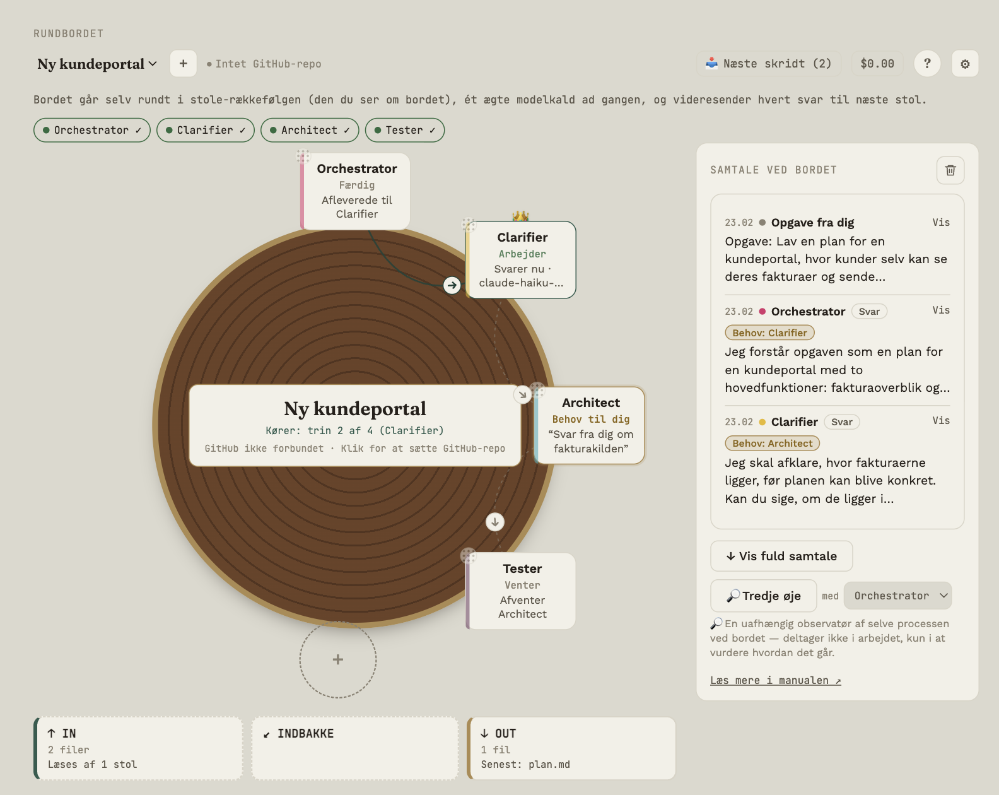
Se en indspillet demo først
Øverst på første skærm står Se den indspillede demo. Den åbner et eget vindue med et færdigt øvelsesbord (en plan for en lille café), hvor du kan klikke rundt, se stolene arbejde efter tur, prøve Tredje øjes valg og se Beskyttelsen virke. Svarene er skrevet på forhånd og kommer ikke fra en model. Der bruges ingen nøgle, det koster ingenting, din egen tekst bruges ikke, og dine egne borde rører demoen aldrig. Intet i demoen gemmes, når du lukker vinduet.
Første gang: vælg en opgave
Første gang du åbner Rundbordet, spørger appen: Hvad vil du gerne have hjælp til? Du kan skrive din egen opgave i feltet øverst (se næste afsnit) eller vælge et eksempel. Der er fire eksempler: Forstå noget svært, Vælg mellem to muligheder, Er det her rigtigt? og Forstå et brev, jeg har fået. Vælg en, og du ser opgaven, et eksempel på, hvordan et svar kan se ud, og hvilke modeller bordet vil bruge. Eksemplet er skrevet på forhånd; det er ikke et svar fra en model, og dit eget svar bliver anderledes.
- Indsæt din OpenRouter-nøgle (der er et link til at hente en), og tryk Tjek nøglen og vis modellerne. Under feltet står, at et ChatGPT- eller Claude-abonnement ikke i sig selv giver en API-nøgle, at du betaler udbyderen direkte, hvor nøglen gemmes, og hvem der modtager opgaven. Nøgletjekket sender ingen opgave.
- Se modellerne og listepriserne, og tryk Opret bordet.
- Opgaven står nu i beskedfeltet. Der er ikke sendt noget til nogen model endnu. Ret opgaven, hvis du vil, og tryk Send til bordet, når du er klar.
Prisgrænsen for en kørsel sættes til 1 USD, så kørslen stopper, når grænsen er nået. Du kan ændre den under bordets indstillinger. Brevopgaven er en forklaring i almindeligt sprog og ikke juridisk rådgivning. Eksempelbrevet er opdigtet; skift det ud med dit eget, eller læg en PDF i IN.
Vil du hellere starte selv, så tryk Start med et tomt bord og følg trinene nedenfor. Du kan altid åbne opgaverne igen ved at trykke på + ved siden af bordvælgeren.
Har du en anden opgave? Få et forslag
Passer ingen af de fire eksempler, så skriv opgaven med dine egne ord i feltet øverst (eller indsæt den tekst, du vil have hjælp til), og tryk Få et forslag til min opgave. Svar så svar på tre korte spørgsmål: hvor meget du selv vil være med undervejs, om du har brugt AI-værktøjer, hvor flere stole arbejder sammen, før, og hvor vigtigt det er, at svaret er rigtigt. Så foreslår appen tre ting, hver med en kort begrundelse:
- Sådan går det: med almindelige ord, hvad bordet gør (bordtypens egen beskrivelse), hvor mange stole der kaldes, og hvad du får ud af det. Der er ikke flere stole eller kald, end bordtypen kræver.
- Bord: en af bordtyperne (Læring, Beslutning, Fakta, Brev, to stole til at bygge, Scrum), valgt ud fra ordene i din opgave. Kan appen ikke se en bestemt type, foreslår den Læring, fordi du så tænker først, og siger, at det er et udgangspunkt.
- Tænkning: Hurtig, Grundig eller Kritisk, ud fra hvor vigtigt det er, at svaret er rigtigt. Forudindstillingen lægges oven på bordets egen opsætning og slår aldrig noget fra, som bordet har slået til. Det er ønsker til modellen, ikke en garanti.
- Visning: Enkel, Mere eller Avanceret, ud fra din erfaring og din lyst til at styre. Det afgøres altid af dine egne svar. Du kan skifte i toppen, når som helst.
Du kan ændre alle tre, før noget oprettes; så står der Du har valgt det selv. Forslaget laves af faste regler i appen, og i den del sendes intet nogen steder.
Vil du have Tredje øje til at læse opgaven og rette bord og tænkning, så tryk Lad Tredje øje læse opgaven (efter at du har tjekket nøglen og set modellerne). Du ser først præcis, hvad der sendes (din opgave og en kort liste over bordtyperne; svarene på de tre spørgsmål sendes ikke), hvilken model der bruges, og et overslag over prisen. Først når du trykker Send, sendes ét kald. Svaret godtages kun, hvis det er et af de kendte valg; ellers ændres intet. Kaldet er med i bordets regning som Tredje øjes udgift. Visningen rører Tredje øje aldrig.
Det skal du bruge
- En API-nøgle fra mindst én udbyder (Anthropic, OpenAI, Google Gemini, Groq, Mistral, xAI, DeepSeek eller en OpenAI-kompatibel tjeneste). Nøglen får du hos udbyderen; i stolens panel er der et link, Hent nøgle.
- Et par kroner på kontoen hos udbyderen. Små modeller koster typisk under en øre pr. svar.
- Mac, Windows eller Linux. Åbner Mac'en ikke appen, eller skal du bruge Linux (fx Omarchy), står det under Installer på Linux og Fejlfinding.
Sådan gør du
- Tilføj en stol. Klik på den stiplede cirkel med + ved bordet. Under Avanceret vælger du en rolle, fx Orchestrator; ellers trykker du + Ny stol og giver stolen et navn.
- Vælg Modelprofil API og model. Har du ingen profil endnu, så sæt en op med udbyder og nøgle (knappen står i stolens panel). Vælg derefter modellen på stolen (skriv navnet eller klik Hent modeller).
- Test. Klik Test API. Får du besked om, at forbindelsen virker, er nøgle og model i orden.
- Gem. Stolen sætter sig ved bordet.
- Tilføj en stol mere, fx Clarifier eller Builder. Stolene må gerne bruge forskellige udbydere.
- Giv bordet en opgave. Nederst står modtagervalget Til. Lad det stå på Alle (start kørsel), skriv en opgave, fx “Lav en plan for en kundeportal”, og klik Send til bordet (eller tryk ⌘/Ctrl+Enter). Linjen ved siden af siger, hvad der sker.
- Bekræft. Bordet viser opgaven, rækkefølgen og forbruget indtil nu. Klik ▶ Start bordet.
- Læs. Første stol svarer, svaret sendes videre til næste stol, og så fremdeles. I Samtale ved bordet ser du forløbet.
Hvad sker der bagefter?
Hver stol slutter sit svar med et lille behov: hvad der stadig mangler, og hvilken rolle der bedst kan løse det. Dem samler bordet i knappen Næste skridt sammen med observationer og forslag fra Tredje øje. Læs mere i Åbne behov og forslag.
Hvor meget skal du selv være med?
Bordet kan køre helt færdigt, eller du kan være med undervejs: stole kan holde pause ved spørgsmål til dig, og du kan skrive dit eget bud, før bordet kører. Under ⚙ → Dette bord → Bordfil → Skabeloner ligger færdige borde (Faktabord, Makkerpar, Scrum, Læringsbord, Beslutningsbord og Brevbord), hver med et mærke: Du er med: lidt / undervejs / hele vejen. Læs mere i Deltag undervejs.
Bordet og stolene
Sådan er bordet bygget op, og hvad du kan gøre med en stol.
Bordet har op til otte pladser. Hver plads er en stol med en rolle, en model og en række indstillinger.
Sådan læser du en stol
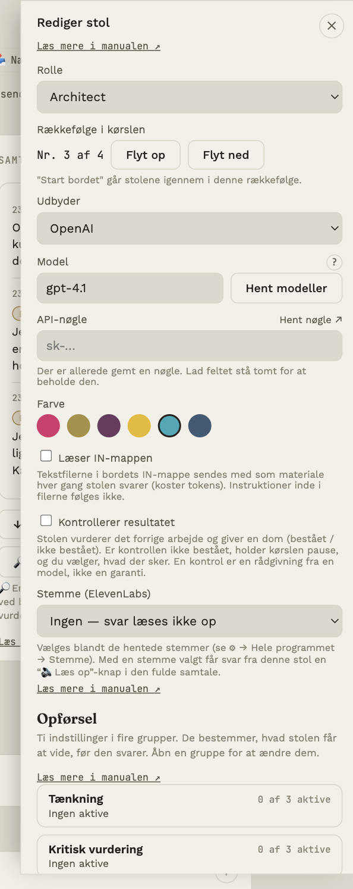
På selve stolen ser du:
- Rollens navn, et statusord og én aktivitetslinje. Statusordet er det, appen kan dokumentere: Arbejder (et modelkald kører), Har turen, Næste i rækken, Venter, Færdig, Kontrol ikke bestået, Behov til dig, Venter på dig (bordet holder pause og venter på dit svar), Pauset eller Fejlet. Linjen under siger, hvad der skete eller afventes, fx Svarer nu · modelnavn, Afventer Clarifier eller Afleverede til Builder. Intet vises, som appen ikke ved.
- Detaljer ved hover: hold musen over (eller tab til) stolen for model, udbyder, mandat, arbejdsform, aktive indstillinger, om den er kontrolstol og om den læser IN. De små ikoner til at ændre mandat og arbejdsform kommer frem på samme måde (se Adfærd og ikoner).
- En lille prik i hjørnet viser, at stolens API-nøgle er testet: grøn betyder, at testen virkede.
- Et kronemærke 👑, hvis stolen har turen (se Hvem har turen).
Det kan du gøre
| Handling | Sådan |
|---|---|
| Tilføje en stol | Klik på den stiplede cirkel med + |
| Redigere en stol | Klik på stolen |
| Flytte en stol | Træk i den lille prikkede hjørne-hane; dobbeltklik for at nulstille placeringen |
| Ændre projektnavn og GitHub | Klik på navnet midt på bordet |
| Slette en stol | Åbn stolen og klik Slet stol |
| Skifte bord | Brug rullelisten øverst til venstre; + ved siden af rullelisten (opgavekort, egen opgave, Hurtig start eller et tomt bord) |
Tre visninger af bordet, samme data
Under ⚙ → Dette bord → Visning af bordet vælger du, hvordan bordet vises (se Indstillinger):
- Rundt: stolene sidder rundt om et rundt bord. Her kan du trække stolene frit og se alle symboler ved hover.
- Kompakt: et mindre, rundt bord med små stole (navn og et lille tegn: ● arbejder, ! behov, … venter). Stolene står på de faste pladser.
- Liste: stolene står under hinanden i bordets rækkefølge, med nummer, status og model. Den passer til smalle vinduer.
- Auto vælger efter bordkolonnens bredde: rundt fra ca. 480 px, kompakt fra ca. 340 px og ellers liste. Visningen skifter først, når bredden er et godt stykke forbi grænsen, så den ikke flimrer.
Valget gælder kun dette bord og gemmes sammen med det. Står den på Auto, kan visningen skifte, når du ændrer vinduets størrelse; vælger du en bestemt visning, ligger den fast. Stolenes data, klik og indstillinger er de samme i alle tre.
Overdragelser mellem stole
Når en stol afleverer sit svar til den næste (i en kørsel eller når du videresender selv), vises det:
Rundt og kompakt bord: en tynd forbindelse mellem stolene med en lille pil midt på, der viser vejen informationen sendes (fra → til); hold musen over den for at se, hvem der afleverer til hvem. Stiplet betyder, at overdragelsen endnu ikke er sket; fuld linje betyder, at den er gennemført i den seneste opgave; en hul pil med kortere streger betyder, at den næste stol kom efter, men ingen overdragelse er logget (fx fordi svaret ikke havde en 🔭-blok); en prik-streg-linje er en genvej uden for rækkefølgen: enten en manuel videresendelse eller en overdragelse, der gik et andet sted hen end rækkefølgen siger (fx ved dynamisk valg af næste stol). Der tegnes ellers kun pile i den planlagte rækkefølge, så en stol ikke ser ud til at have to planlagte pile; genvejen er mærket med navnene (hold musen over den). Nederst til venstre på bordet står en lille forklaring til linjerne. Pilen sidder tæt på modtageren, så den ikke havner oven på midten af bordet. Når en overdragelse sker, løber en lille prik langs linjen (højst ét ad gangen, fordi bordet arbejder sekventielt; ved reduceret bevægelse vises ingen bevægelse).
Liste: en lille pil mellem rækkerne (svævetip: "Afleveret til Builder"), og når overdragelsen er sket, hvordan den blev sendt ("fuld tekst" eller "struktureret").
Resumé: klik på pilen eller forbindelsen, eller på overdragelseslinjen under et svar i den fulde samtale. Er overdragelsen struktureret, ser du fakta, beslutninger, åbne spørgsmål, advarsler og forventet output. Er den fuld tekst, står der tydeligt, at hele svaret blev sendt uden felter, og hvorfor (bordets indstilling, svaret havde ingen strukturerede felter, eller modtageren er en kontrolstol, som altid får hele teksten). Du ser også, hvor mange tegn der blev sendt.
Spørgsmål til dig: har en stol et spørgsmål til dig, får pilen ud fra den et mærke (gult tal, rødt eller grønt ✓), og et klik viser spørgsmålet og et svarfelt. Se Deltag undervejs.
Det bygger på de data, appen allerede har; der laves ingen ekstra modelkald.
Stolens panel
- Rolle (begreb) og rollenavn: vælg et begreb på listen. Rollenavn står lige under og er tomt som standard; skriver du et navn, bruges det i stedet for begrebet overalt på bordet (se Roller).
- Modelprofil API: vælg den profil, der har udbyder og nøgle. En profil sætter du op én gang under ⚙ → Hele programmet → Modelprofiler API … (knappen står også i stolens panel). Nøglen skrives aldrig på stolen.
- Model: vælg modellen på stolen; Hent modeller henter den aktuelle liste direkte fra udbyderen via profilens nøgle.
- Test API: sender et lille prøvekald, så du ser, om nøgle og model virker.
- Farve: kun for overblikkets skyld.
- Læser IN-mappen: giver stolen adgang til dit materiale (se IN og OUT).
- Kontrollerer resultatet: gør stolen til kontrolstol (se Kontrol og tilbagesendelse).
- Stemme (ElevenLabs): vælg en stemme, så stolens svar kan læses højt (se Stemme).
- Instruktioner (avanceret): stolens ti adfærdsindstillinger (se Adfærd og ikoner).
Bordfil: gem, del og importér
Under ⚙ → Dette bord → Bordfil kan du gemme bordets opsætning som en fil: roller, model og udbyder, dials, ikoner, tilvalg, tilføjelser, kontrolstole, overdragelsesform, runder, eget bud først og prisgrænse. Filen indeholder aldrig nøgler, adresser, stemmer, beskeder, hukommelse eller Beskyttelsens ord, så den kan lægges i git eller sendes videre.
- Eksportér bordfil gemmer en
.bord.json-fil, hvor du vælger. - Skriv roller og setup som dokument i OUT laver en læsbar Markdown-fil om hver stol: model, mandat, aktive dials, tilføjelser, de seneste ændringer og den fulde instruktion, modellen får. Den ligger i OUT, og at rette i den ændrer ikke bordet.
- Importér bordfil opretter altid et nyt bord; dit eksisterende bord røres ikke.
En stols rollenavn og begreb (fx OUT Writer) står hver for sig i filen, så en omdøbt stol beholder sin funktion, også efter import. Ældre filer uden begreb virker som før.
Appen kontrollerer filen mod en fast liste (kendte udbydere, dials, tilstande og ikoner), afkorter tekster og springer ugyldigt over med en advarsel. Højst 12 stole og 20 tilføjelser pr. stol.
Skabeloner: færdige borde efter, hvor meget du er med
Under ⚙ → Dette bord → Bordfil ligger Skabeloner. Hver skabelon har et mærke, der siger, hvor meget du er med. Ikke alle opgaver har brug for dig hele vejen: et rent opslag af fakta har ingen glæde af pauser, mens et valg eller en læringsopgave netop vinder ved dem. Du ser alle instruktioner i forhåndsvisningen, før noget oprettes.
| Skabelon | Du er med | Hvad den er til |
|---|---|---|
| Faktabord | lidt | Researcher samler viden med kilder, Reviewer (kontrolstol) kontrollerer kilder og usikkerhed, og OUT Writer skriver resultatet som fil. Højst to runder, ingen pauser |
| Makkerpar | lidt | Driver laver, Navigator gennemgår (se Kontrol og tilbagesendelse) |
| Scrum | undervejs | Sprintplanlægning, se nedenfor |
| Læringsbord | hele vejen | Du tænker først. Clarifier (⏸) beder om dit eget bud, Forklarer (⏸) giver perspektiver og siger, hvad der er usikkert, Udfordrer (?) stiller spørgsmål til dine antagelser, og Skriver hjælper dig med at formulere din egen konklusion |
| Beslutningsbord | hele vejen | Clarifier, Analytiker (fordele og ulemper), Berørte (de berørtes perspektiv), Udfordrer (⏸) og OUT Writer, der skriver et beslutningsnotat med din beslutning og de åbne spørgsmål |
Læringsbordet og Beslutningsbordet har desuden Eget bud først slået til (se Deltag undervejs): du skriver dit eget bud, før bordet kører, og ser det ved siden af resultatet bagefter. Mandaterne (✓ ? ⏸) i Læringsbordet og Beslutningsbordet virker, fordi nye borde har Mandatet styrer forløbet slået til (se Deltag undervejs). I Beslutningsbordet sidder pausen lige før OUT Writer, så din beslutning kan skrives i pausekortet. Dine afgørelser og de åbne spørgsmål følger desuden med i beslutningsregistret (se Deltag undervejs), så notatet kan forholde sig til dem.
Ingen af skabelonerne beslutter noget for dig. Du kan altid ændre stole, mandater og instruktioner bagefter.
Scrum
Scrum: sprintplanlægning opretter et bord med fem stole: Product Owner (læser visionen i IN og prioriterer), Scrum Master (faciliterer og holder øje med mål og kapacitet), Developer (estimerer i point), Tester (kontrolstol, der tjekker acceptkriterier) og OUT Writer (skriver planen som fil). Du ser alle instruktioner i forhåndsvisningen, før bordet oprettes, og stolene får udbyder og nøgle bagefter (Genbrug mine nøgler kan låne dine egne).
Læg projektets vision og backlog i IN, skriv opgaven (fx Planlæg næste sprint) og start bordet. Stolene arbejder ét led ad gangen, og du er med: bordet aftaler ikke selv noget uden dig.
Roller
Rollen er stolens navn og udgangspunkt; adfærden styrer du selv.
Når du vælger en rolle, får stolen navnet som sin identitet (“Du er Clarifier.”). Rollen er ikke en færdigskrevet personlighed; hvordan stolen arbejder, afgøres af indstillingerne under Adfærd og ikoner. Vælg rollen efter hvad du vil bruge stolen til.
Begreb og rollenavn
Rollen på listen er stolens begreb. Rollenavn står lige under og er tomt som standard; skriver du et navn der, bruges det i stedet for begrebet overalt på bordet (i samtalen, på stolen og i modtagerlisten). Begrebet gælder stadig: en stol med begrebet OUT Writer afleverer i OUT, uanset hvad den hedder. Dine egne roller kan gemmes under ⚙ → Hele programmet → Dine roller (se Indstillinger).
Listen med begreber, og rolleknapperne når du tilføjer en stol, vises kun under visningen Avanceret. På Enkel og Mere trykker du + Ny stol og giver stolen et navn; vil du have, at stolen gemmer sit svar som en fil i OUT, sætter du kryds i Skriver til OUT først. Du giver altså en ny stol bare et navn, og en eksisterende stol beholder sit begreb. Skifter du begreb under Avanceret, står det i stolens historik (Begreb: Builder → Reviewer), og du kan rulle det tilbage.
Rollernes startindstillinger
Et begreb er ellers kun et navn, men hvert begreb kan få startindstillinger: hvor grundig og kritisk stolen er (dials), egne instruktioner, om den er kontrolstol, og om den læser IN-mappen. Appen har forslag til de vigtigste roller (Orchestrator, Clarifier, Researcher, Builder, Tester, Reviewer, Documenter og OUT Writer).
- Giver du en stol et begreb (en ny stol, eller et nyt begreb på en eksisterende), viser appen først en konsekvensgennemgang: præcis hvilke indstillinger der ændres, og en advarsel, hvis det kan give flere eller større kald (kontrolstol eller læsning af IN). Du vælger Brug rollens indstillinger, Behold stolens indstillinger eller Fortryd rollevalget. Intet er gemt, før du gemmer stolen, og ændringen står i stolens historik.
- Lad Tredje øje foreslå: i konsekvensgennemgangen kan du bede Tredje øje om et eget forslag til rollens indstillinger og instruktioner. Appen viser først præcis, hvad der sendes (kun rollens navn og stolens egne instruktioner) og et overslag over størrelsen, og sender intet, før du trykker Send til Tredje øje. Forslaget vises som ændringer før og efter, og du kan vende tilbage til appens eget forslag. Kaldet bogføres på bordet.
- Selvstændighed, regler og omkostning sættes aldrig af en rolle; de er dine egne valg.
- Ret dem under ⚙ → Hele programmet → Rollernes startindstillinger: vælg et begreb, ret og gem. Gendan forslaget fjerner dine rettelser.
Rollerne
| Gruppe | Roller |
|---|---|
| Kerne- og styringsroller | Orchestrator (holder overblikket og fordeler arbejdet), Router (peger på hvem der skal tage næste skridt), PM (Product), Communicator |
| Analyse og planlægning | Clarifier (stiller afklarende spørgsmål), Researcher, Architect, Planner |
| Udvikling og implementering | Builder, Database, Frontend, Backend, DevOps |
| Kvalitetssikring | Tester, Security, Reviewer, Evaluator |
| Viden, læring og forbedring | Documenter, Memory, Process Analyst, Learning Agent |
| Specialiserede roller | UX Researcher, API Specialist, Performance, Compliance, Human |
| Aflevering | OUT Writer: skriver bordets resultat som en fil i OUT-mappen (se IN og OUT) |
Din egen rolle
Vælg Andet (skriv selv) i rullelisten og giv rollen et navn, fx Debugger eller Redaktør. Navnet bruges som stolens identitet.
Skabelonerne bruger også egne rollenavne (fx Driver, Navigator, Forklarer, Udfordrer, Skriver, Berørte). Det er roller, du selv kunne have skrevet under Andet, med en færdig instruktion (se Bordet og stolene).
En god sammensætning
Start småt: en stol til at afklare, en til at bygge og en til at kontrollere. Flere stole giver flere kald og dermed højere regning, men ikke nødvendigvis bedre resultater. Se pris og forbrug under Målinger og Priser og forbrug.
Vælg model
Du vælger en modelprofil API i stolens panel; den har udbyder og nøgle, og modellen vælger du selv på stolen (se Indstillinger).
Skriv de første bogstaver i feltet Model, så vises alle modeller, der passer. Vælg med ↑ ↓ og Enter, eller klik. Du kan også skrive et modelnavn, der ikke står på listen.
Hent modeller henter den aktuelle liste direkte fra udbyderen (kræver nøglen); forslagene, der står i forvejen, kan være forældede. Hos OpenRouter hedder modellerne udbyder/model, fx openai/gpt-4.1; skriv anthropic/ for kun at se den udbyders modeller.
Hvem har turen
Kronen viser, hvilken stol der står for tur.
Ved bordet kan én stol ad gangen have turen. Den markeres med en krone 👑. Turen er en synlig markør; den hjælper dig og bordet med at holde styr på, hvem der er “den næste”.
Turen skifter af sig selv
- Når du starter bordet, følger turen med rundt fra stol til stol.
- Sender du en besked direkte til en stol, eller videresender du et svar, får modtageren turen.
Giv turen manuelt
Under bordet står en linje som “👑 Clarifier har turen — klik for hvorfor”. Klik på den for at åbne panelet Hvem har turen:
- Vælg en stol og skriv evt. en begrundelse (valgfrit).
- Klik Giv turen, eller Ingen har turen for at fjerne kronen.
Begrundelsen gemmes, så du senere kan se, hvorfor turen blev givet.
Start bordet
Lad stolene arbejde efter tur på samme opgave, og hold øje med forbruget.
En kørsel er, når bordet går rundt i stolene i den rækkefølge, du ser dem, og sender opgaven og hvert svar videre.
Sådan starter du
- Lad Til stå på Alle (start kørsel).
- Skriv opgaven i feltet (det vokser med teksten) og klik Send til bordet (eller tryk ⌘+Enter / Ctrl+Enter).
- Bordet viser en bekræftelse: opgaven, stolene i rækkefølge, det hidtidige forbrug og, hvis stole læser IN-mappen, hvor mange filer og omtrent hvor mange tokens det koster pr. kald.
- Klik ▶ Start bordet. Eller Justér, hvis du vil rette noget først; din tekst bliver stående.
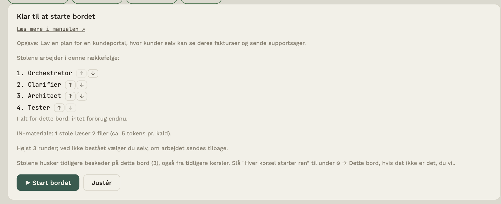
Under kørslen
- Én stol svarer ad gangen, med et ægte modelkald. Statusord og fremdrift ses på bordet.
- Hver stol får den oprindelige opgave med, plus det forrige svar som overlevering, så opgaven ikke forsvinder undervejs (se Målinger og overdragelse).
- Før bordet starter, tjekkes det, at alle stole har en Modelprofil API og en model; ellers starter det ikke, og appen siger, hvad der mangler. Svarer en stol ikke, springer bordet videre og skriver en note.
- Får en stol en forbigående fejl (for mange forespørgsler, overbelastet udbyder, timeout, netværk), prøver bordet igen op til to gange med en kort pause. Ugyldig nøgle eller forkert modelnavn gentages ikke, og stolen springes over.
- Er en stol kontrolstol, og består den ikke, holder kørslen pause, og du vælger (se Kontrol og tilbagesendelse).
- Klik ■ Stop for at afbryde. Allerede modtagne svar bevares.
Resultatet: find, kopiér, gem og brug igen
Når en kørsel er færdig, åbner Resultat af sig selv (og kan altid åbnes med knappen Resultat ved beskedfeltet). Kortet samler det, der allerede findes, uden et nyt kald til nogen model og uden at opdigte noget:
- Konklusion: bordets seneste svar, ordret, med navnet på stolen.
- Dine beslutninger: de spørgsmål, du har besvaret eller sprunget over.
- Åbne spørgsmål: de spørgsmål til dig, der ikke er afgjort endnu.
Dele, der ikke findes, udelades. Tryk Kopiér for at lægge resultatet på udklipsholderen, eller Gem som fil for en Markdown-fil. Samtalen og de enkelte svar står stadig i samtalen, hvis du vil se, hvordan svaret blev til.
Brug bordet igen giver samme fremgangsmåde, nyt materiale. Appen forklarer først, hvad der følger med (stolene, deres indstillinger og instruktioner, pilene og bordets indstillinger, også Beskyttelsens ord og regler) og hvad der ikke gør (samtalen, dine beslutninger og åbne spørgsmål, hukommelse, målinger, GitHub-adgang og filerne i IN). Først når du bekræfter, oprettes et nyt, rent bord. Der sendes intet, før du selv trykker Send, og det gamle bord og dets resultat bliver, som de er.
Vil du være med undervejs?
Bordet kan holde pause ved en stols spørgsmål til dig, vise åbne spørgsmål på pilene, samle dine afgørelser i et beslutningsregister og lade dig skrive dit eget bud først. Alt det står i Deltag undervejs.
Starter hver kørsel ren?
Under ⚙ → Dette bord kan du slå Hver kørsel starter ren til. Så ser en stol kun den aktuelle opgaves egne beskeder, når bordet kører, og husker ikke tidligere kørsler på bordet. Det forhindrer, at en tidligere kørsel (fx et andet forsøg på samme bord) farver den næste. Nye borde har det slået til; eksisterende borde er uændrede (stolene husker deres hele samtale). Startbekræftelsen siger, hvad der gælder. Når du skriver direkte til én stol, gælder hele samtalen stadig.
Prisgrænse
I projektpanelet (klik på navnet midt på bordet) kan du sætte en prisgrænse pr. kørsel. Har kørslen brugt beløbet, stopper bordet, før næste stol kaldes, og skriver en note. Det sidste svar kan overskride grænsen lidt. Kun kald med kendt pris tælles (se Priser og forbrug). Tom = ingen grænse. Grænsen er listepris, ikke udbyderens faktura, den tjekkes kun mellem stolene, og et enkelt kald kan gå over den.
Før start viser bekræftelsen et skønnet forbrug ud fra stolenes seneste kald. Det er et skøn: har en stol ikke svaret før, kan den ikke skønnes, og så siger bekræftelsen det i stedet for at gætte; en model uden listepris nævnes, fordi dens kald ikke kan regnes med. Prisen afhænger af model, materiale og antal kald, og flere stole og gentagelser kan øge den. Bekræftelsen viser også, hvilken udbyder der modtager opgaven.
Kun én stol
Vælg stolens navn under Til og send. Så svarer kun den, og den får turen.
Deltag undervejs
Pause ved spørgsmål, beslutningsregister og dit eget bud: sådan er du med, i stedet for kun at vente på resultatet.
Et bord kan køre helt færdigt uden dig, eller du kan være med undervejs. Hvor meget, afgør du: pr. stol (mandatet), pr. bord (indstillingerne under ⚙ → Dette bord) og pr. kørsel (om du skriver et eget bud). Ikke alle opgaver har brug for dig. Et rent opslag af fakta kan køre uden pauser; et valg eller en læringsopgave vinder ved dem.
| Funktion | Hvad den gør | Hvor du styrer den |
|---|---|---|
| Mandat som stop | Bordet holder pause efter en stol og viser dig dens spørgsmål | Mandat-ikonet på stolen + Mandatet styrer forløbet |
| Pilen viser det åbne | Åbne spørgsmål vises på pilen mellem stolene, og du kan svare dér | Altid, hvor en stol har et spørgsmål til dig |
| Beslutningsregister og afslutningstjek | Dine afgørelser følger med til de næste stole; efter kørslen tælles de åbne spørgsmål | Altid |
| Pause og overdragelse pr. pil | Pause før en bestemt stol, eller kun opgaven og dine afgørelser | Pilens panel, Denne pil |
| Uenigheder | To svar ved siden af hinanden, og en model, der peger på forskellene | Overblik → Uenigheder |
| Tilbageblik | En kalenderfil, der minder dig om at se tilbage på en beslutning | Overblik → Tilbageblik |
| Kuverten | Du ser og kan rette den tekst, næste stol får, før den kaldes | Se og redigér kuverten |
| Eget bud først | Du skriver dit bud, før bordet kører, og ser det ved siden af resultatet | Eget bud først |
De færdige borde under Skabeloner er sat op efter, hvor meget du er med (se Bordet og stolene). Hvor meget du faktisk har været med, kan du se som tal under ⚙ → Dette bord → Målinger → Din deltagelse (se Målinger og overdragelse).
Overblik: ét sted for det, der kræver dig
Øverst i topbaren står Overblik. Under knappen ligger fem ting samlet: Næste skridt, Tilbageblik, Uenigheder, Regning og priser og Jeg sidder fast. Hver række åbner det, den tidligere knap åbnede. På Enkel vises Næste skridt, regningen og Jeg sidder fast; Mere og Avanceret tilføjer Tilbageblik og Uenigheder.
Jeg sidder fast står også som en egen knap i topbaren på alle niveauer, så sikkerhedsnettet altid er ét klik væk.
Tallet på knappen er kun det, appen ved kræver dig: ting, kun du kan afgøre, og en kørsel, der venter på dig. Står der intet tal, kræver intet dig lige nu. Menuen lukker, når du vælger noget, trykker Escape eller klikker udenfor.
Mandat som stop: kør helt færdigt, eller deltag undervejs
Mandat-ikonet på hver stol styrer, om bordet holder pause efter stolen. Det gælder, når Mandatet styrer forløbet er slået til under ⚙ → Dette bord (nye borde har det slået til; eksisterende borde er uændrede):
| Ikon | Hvad der sker |
|---|---|
| ✓ | Bordet kører videre uden dig. Spørgsmål samles ikke op her |
| ? | Bordet stopper, når stolen har et spørgsmål, som kun du kan afgøre |
| ⏸ | Bordet stopper altid efter stolen, så du selv ser resultatet |
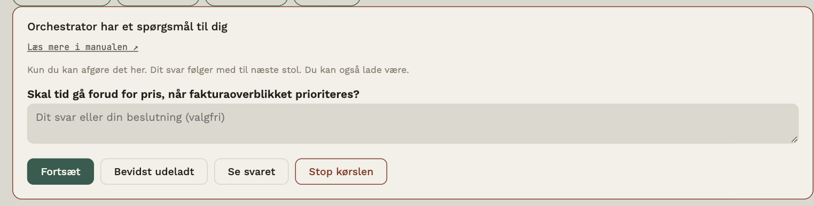
Et spørgsmål til dig er stolens 🔭 Behov, når det begynder med VURDERING: (værdier, prioritering, konsekvenser), eller når det ikke peger på en stol ved bordet. Begynder det med FAKTA: (noget, en stol eller en fil kan svare på), stopper bordet ikke. Et behov, der er "intet", er intet spørgsmål.
Ved en pause kan du:
- skrive dit svar (eller, ved ⏸, en kommentar til næste stol) og trykke Fortsæt. Svaret og spørgsmålet kommer i beslutningsregistret og følger med til de næste stole (se nedenfor). En kommentar (uden spørgsmål) går kun til næste stol;
- trykke Bevidst udeladt: næste stol får at vide, at du valgte ikke at svare, og at den ikke må antage et svar;
- se stolens svar (Se svaret: svaret åbner i selve pausen, og pausen får en ramme, til du har svaret eller trykker Skjul svaret) eller Stoppe kørslen.
Kontrolstole stopper ikke herfra; de har deres egen beslutning (se Kontrol af resultater). Efter den sidste stol er der ingen pause. I aktivitetsstrømmen og hændelserne står kun, at der var en pause, og hvor mange spørgsmål der blev besvaret eller udeladt, aldrig dine svar.
Pilen viser det åbne
Når en stol i sit svar har et spørgsmål til dig (et behov, der begynder med VURDERING:), får pilen fra stolen et lille mærke: et tal for åbne spørgsmål (gult), eller rødt, når bordet holder pause og venter på dig. Er spørgsmålet afgjort, står der et grønt ✓. Tryk på pilen for at se dem:
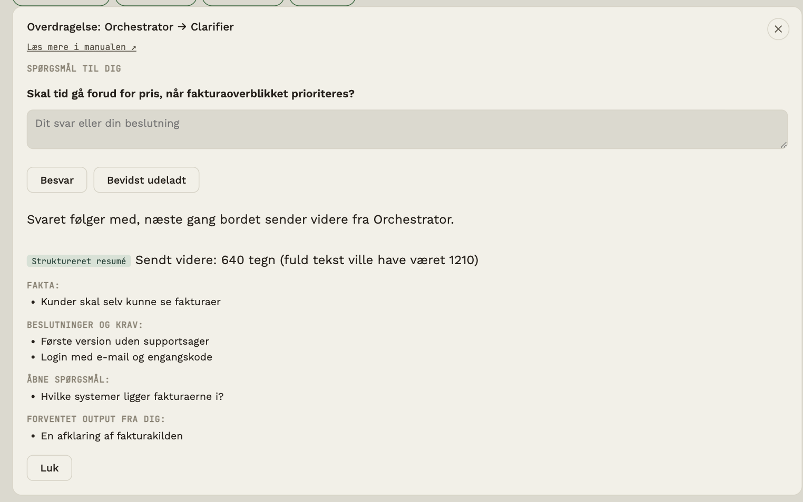
- Besvar gemmer dit svar. Bevidst udeladt gemmer, at du valgte ikke at svare. Et tomt svar tæller ikke.
- Svaret kommer i beslutningsregistret (se nedenfor).
- Et afgjort spørgsmål tæller ikke længere i Næste skridt.
- Holder bordet pause, besvarer du i pausekortet; pilen viser det samme og har en knap derhen.
- Hændelserne (
question.answered,question.skipped) siger kun, at du svarede, aldrig hvad.
Spørgsmålene sidder på den første pil ud fra hver stol. Den sidste stol har ingen pil ud, så dens spørgsmål står kun i Næste skridt.
Beslutningsregistret og afslutningstjekket
Alle dine afgørelser i en opgave (svar og Bevidst udeladt, på pilen eller i pausekortet) samles i et beslutningsregister. Det følger med i hver overdragelse til de næste stole, i kørsler og med Videresend: stolene får dine svar, får at vide, hvad du bevidst lod ligge, og ser, hvilke spørgsmål der stadig er åbne. De får besked om ikke at opfinde svar og ikke at afgøre de åbne selv. OUT Writer skal forholde sig til hvert punkt: afgjorte med dit svar, åbne i en sektion Åbne spørgsmål.
Efter en gennemført kørsel gør afslutningstjekket (regler, ingen model) opmærksom på, hvor mange spørgsmål til dig der stadig er åbne, og hvilke. Det står i aktivitetsstrømmen og i hændelserne (run.closingcheck, kun tal). Tjekket kontrollerer ikke, om en OUT-fil rent faktisk nævner et spørgsmål; det er stolens opgave, og du bør læse filen.
Registret gælder den seneste opgave. Tidligere opgavers afgørelser tages ikke med.
Pause og overdragelse pr. pil
Tryk på en pil mellem to stole. Under Denne pil kan du ændre to ting for netop den overgang:
- Stop her: du læser, før [næste stol] starter (pilens pause): bordet stopper altid, når den forrige stol er færdig, og viser Pause før … med svaret, eventuelle spørgsmål og et felt til en kommentar til næste stol. Pausen lægges oveni stolens mandat: stopper mandatet, eller pilen har en pause, stopper bordet. Den gælder også, når Mandatet styrer forløbet er slået fra. Pilen får et lille ⏸. Forskellen på pilens pause og mandatet ⏸: pilens pause sidder på én bestemt pil og virker altid i fast rækkefølge; mandatet ⏸ sidder på stolen (også når næste stol vælges dynamisk), men virker kun, når Mandatet styrer forløbet er slået til. Begge giver det samme stop og det samme pausekort.
- Overdragelse til denne stol: Som bordet (standard), Fuld tekst, Struktureret eller Kun opgaven og dine afgørelser. Med den sidste ser stolen ikke det forrige svar, kun opgaven og beslutningsregistret. Det er en måde at få et uafhængigt bud på, som ikke bygger på det, der stod før. En kontrolstol får altid hele teksten.
Det gælder fra næste overdragelse og i en kørsel og med Videresend, og hændelsen edge.configured gemmer kun valget. Pausen gælder i fast rækkefølge; vælger du selv næste stol (⚙ → Dette bord → Hvem tager næste?), har du allerede en beslutning ved hver overgang. Indstillingerne pr. pil gemmes med bordet, men ikke i bordfilen, fordi de hænger på bordets stole.
Uenigheder mellem to svar
⚖ Uenigheder (under Overblik) sætter to svar ved siden af hinanden, helst fra to forskellige modeller. Uenighed er der, hvor du selv skal tænke, og det er sjældent det, man ser, når svarene står hver for sig.
- Appen vælger som standard de to seneste svar fra forskellige modeller i den seneste opgave. Du kan vælge andre. Kommer de to svar fra samme model, står der en note om, at uenigheder siger mindre da.
- Tryk Find uenigheder, og en model peger på forskellene: hvad de er enige om, hvad de er uenige om (med hvad A og B hver siger), og hvad der er uklart. Du vælger selv, hvilken stol der låner regnekraft, og helst en model, der hverken er A eller B. Det koster ét kald, og begge svar sendes først, når du trykker (via Beskyttelse, hvis den er slået til).
- Svaret er modellens vurdering og kan tage fejl. Kan appen ikke læse det, vises det, som det er. Læs altid selv de to svar.
- Ved hver uenighed kan du skrive din afgørelse og gemme den i beslutningsregistret, så den følger med til de næste stole.
- Hændelserne (
diff.opened,diff.analysed) har kun antal, aldrig tekst, og Målinger tæller sammenligningerne.
Der er ingen måling af, at det hjælper at lade forskellige modeller kontrollere hinanden. Modeller kan begå de samme fejl, og en model, der vurderer to modeller, er stadig en model.
Tilbageblik i kalenderen
🗓 Tilbageblik (under Overblik) laver en kalenderfil (.ics), der minder dig om at se tilbage på en beslutning om en uge, to uger eller en måned.
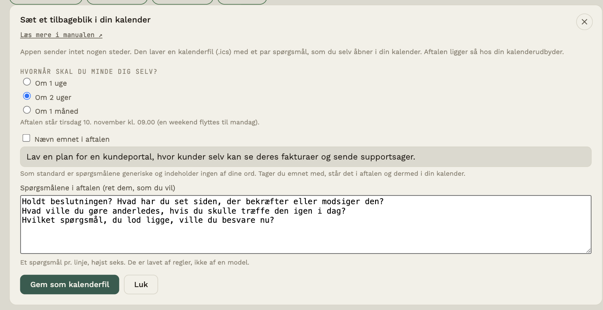
- Appen sender intet. Den gemmer en fil, og du åbner den i din egen kalender. Aftalen ligger derefter hos din kalenderudbyder.
- Spørgsmålene er 2-3 og lavet af regler, ikke af en model, fx Holdt beslutningen? Hvad ville du gøre anderledes? Hvilket spørgsmål, du lod ligge, ville du besvare nu? Har du skrevet et eget bud, spørges der også til, hvordan det stod sig mod bordets. Du kan rette dem, som du vil.
- Som standard indeholder aftalen ingen af dine ord. Vil du have emnet med (dit seneste afgjorte spørgsmål, eller opgaven), skal du selv sætte kryds. Så står det i aftalen og dermed i din kalender.
- Parkér dine åbne spørgsmål: sæt kryds ved Tag mine åbne spørgsmål med, så står de spørgsmål, du endnu ikke har besvaret, i aftalens beskrivelse, og du glemmer dem ikke. Med Tag mine afgørelser med kommer også dine afgørelser (spørgsmål og dit svar) med. Begge er slået fra som standard, fordi teksten ellers står i din kalender. Du ser, og kan rette, præcis det der kommer med, før noget gemmes.
- Aftalen står kl. 09.00 lokal tid. Falder dagen i en weekend, flyttes den til mandag. Kalenderen minder dig ved start; appen gør det ikke.
- Hændelsen
reflection.scheduledgemmer kun valgene (tidspunkt, antal spørgsmål, om emnet er med), aldrig teksten, og Målinger tæller, hvor mange kalenderfiler du har lavet.
Det er en idé, ikke en målt metode: der er ingen evidens for, at et tilbageblik hjælper. Det koster dig kun den tid, du selv sætter af.
Se og redigér kuverten, før den sendes
Slår du Se og redigér kuverten, før den sendes til under ⚙ → Dette bord, stopper bordet, lige før en stol kaldes, og viser præcis den tekst, stolen får: opgaven, forrige svar, beslutningsregistret og dine noter. Det gælder både en kørsel og Videresend. Pilen mellem de to stole får et rødt ✉, og et klik på pilen leder til kuverten.
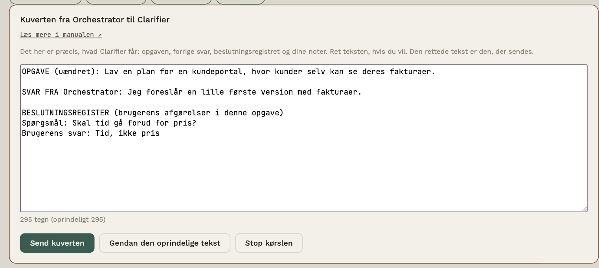
- Ret teksten, hvis du vil: fjern noget, der ikke skal med, eller tilføj en linje. Tælleren viser antal tegn og om teksten er rettet, og Gendan den oprindelige tekst sætter den tilbage.
- Send kuverten sender den tekst, du ser, og den rettede tekst gemmes i samtalen (markeret som rettet), så den viser, hvad stolen faktisk fik.
- Stop kørslen (eller Annullér afsendelsen ved Videresend) sender intet. Stolen kaldes ikke, og overdragelsen logges ikke, fordi den ikke skete.
- Opgaven til den første stol vises ikke som en kuvert; den har du selv skrevet.
- Hændelserne (
envelope.opened,envelope.sent,envelope.edited,envelope.cancelled) har kun antal tegn og om du rettede, aldrig teksten.
Det koster et klik pr. overdragelse, så det er slået fra som standard. Det passer, når du vil kontrollere, hvad en stol får at vide, fx ved fortrolige oplysninger eller for at fjerne støj. En rettelse gælder kun den ene kuvert; den følger ikke med til de næste.
Dit eget bud først
Slår du Eget bud først til under ⚙ → Dette bord, får startbekræftelsen et felt: Dit eget bud først (valgfrit). Skriv, hvad du selv tror, svaret eller løsningen er, og hvorfor, før bordet kører. Læringsbordet og Beslutningsbordet har det slået til.
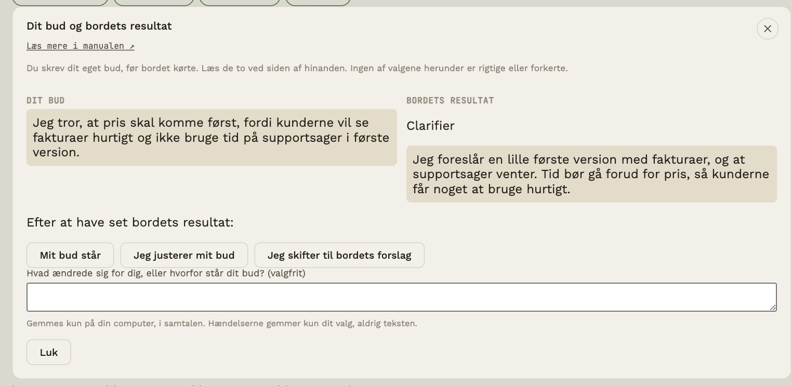
- Stolene ser ikke dit bud. Det sendes til ingen stol, så bordets resultat er et uafhængigt bud, du kan sammenligne med. (Vil du have, at en stol bruger det, så skriv det i opgaven eller i et svar i pausekortet.)
- Buddet står i samtalen som en besked fra dig, og i hændelserne står kun, at du skrev et (og hvor langt det var), aldrig hvad.
- Er kørslen færdig, vises dit bud og bordets resultat ved siden af hinanden. Du kan vælge Mit bud står, Jeg justerer mit bud eller Jeg skifter til bordets forslag, og skrive en valgfri forklaring. Ingen af valgene er rigtige. Valget og forklaringen gemmes på din computer, i samtalen; hændelsen gemmer kun valget.
- Lader du feltet stå tomt, springer du det bevidst over. Så vises der ingen sammenligning.
Formålet er, at du tænker, før du ser bordets svar, så du ikke bare tager det første, der står der. Det koster dig lidt tid hver gang; derfor er det valgfrit pr. bord og pr. kørsel.
Kontrol og tilbagesendelse
Lad en stol vurdere resultatet, og bestem selv, hvad der sker, når det ikke består.
En kontrolstol læser det forrige arbejde, sammenholder det med den oprindelige opgave og giver en dom: bestået eller ikke bestået. Består det ikke, holder kørslen pause, og du vælger, hvad der sker. Intet sker af sig selv.
Sæt en stol til at kontrollere
- Åbn stolen (typisk en Tester, Reviewer eller Evaluator).
- Sæt kryds ved Kontrollerer resultatet, og gem.
- Placér stolen efter den stol, der laver arbejdet.
Stolen får den fulde tekst fra forrige stol (ikke kun overdragelsen), så den kan vurdere selve resultatet. Den slutter sit svar med en dom, som du ser under svaret i samtalen: 🧪 Kontrol: bestået eller ikke bestået.
Når kontrollen ikke består
Kørslen holder pause, og du får tre valg:
| Valg | Hvad der sker |
|---|---|
| Send tilbage til [stol] | Stolen får kontrolnoten og den oprindelige opgave og retter sit svar. Derefter går kørslen videre, og kontrollen vurderer igen. Målet er den rolle, kontrollen selv anbefalede, hvis den sidder tidligere i rækken, ellers den nærmeste tidligere stol |
| Fortsæt alligevel | Kørslen fortsætter trods dommen. Overstyringen logges |
| Stop kørslen | Kørslen afsluttes med en note |
Der kan højst sendes tilbage to gange i en kørsel (tre runder). Derefter er der kun fortsæt eller stop, så ingen kørsel kan gå i ring. Loftet kan ændres, se Runder nedenfor.
En uklar dom (svaret har ingen linje med PASS eller FAIL) regnes aldrig for bestået. Den behandles som ikke bestået.
Runder og makkerpar
En runde er ét gennemløb: stolen laver, kontrollen vurderer. Første gennemløb er runde 1, og hver tilbagesendelse giver en ny. Under ⚙ → Dette bord (når bordet har en kontrolstol) sætter du højst antal runder (1 til 10; 1 betyder ingen tilbagesendelse, standard er 3) og kan sætte kryds ved Send selv tilbage, når kontrollen ikke består.
Med krydset sender kontrollen en tydelig FAIL tilbage af sig selv, til loftet er nået. Så er det dig, der vælger, som beskrevet ovenfor. En uklar dom sendes aldrig tilbage af sig selv. Hver automatisk tilbagesendelse står i aktivitetsstrømmen med begrundelsen, statuslinjen viser runde 2 af 3, og du kan altid stoppe.
Skabelonen Makkerpar: laver og gennemgår (under ⚙ → Dette bord → Bordfil → Skabeloner) er sat op sådan: Driver laver arbejdet, Navigator gennemgår det mod opgaven og siger PASS eller FAIL, og de tager op til tre runder. Du ser alle instruktioner i forhåndsvisningen, før bordet oprettes. Hvor godt et makkerpar virker, er ikke målt; sammenlign selv pris og resultat med én enkelt stol.
Kræv bevis for PASS (valgfrit)
En kontrol kan skrive PASS, uden at have læst efter. Slå Kræv bevis for PASS til under ⚙ → Dette bord (vises, når bordet har en kontrolstol), og kontrolstolen bliver bedt om at citere det, den har set, før den siger PASS:
🔎 BEVIS: "ordret stump fra det svar, kontrollen fik"
🧪 KONTROL: PASS
Appen slår selv hvert citat op i den tekst, kontrollen fik at vurdere (store og små bogstaver, mellemrum, anførselstegn og markdown er ligegyldige; "…" må stå for udeladt tekst). Et PASS regnes kun for bestået, hvis der er mindst ét citat, alle citater findes ordret, og hvert er mindst 12 tegn i ét stykke. Ellers vises PASS uden bevis: kørslen holder pause, porten før OUT lukker, og du vælger som ved en ikke bestået kontrol. Et PASS uden bevis sendes aldrig tilbage af sig selv, heller ikke med automatisk tilbagesendelse, for den kan ikke vide, hvad der mangler. En FAIL kræver intet bevis.
Port før OUT
Er den seneste kontrol i en opgave ikke bestået, gemmes intet i OUT, hverken af OUT Writer eller med ↓ Gem i OUT. I stedet kommer en note med knappen Gem alligevel. Det er en bevidst overstyring, og den logges.
Målinger
Målinger viser antal beståede, ikke beståede og uklare kontroller, tilbagesendelser, overstyringer og gentagelser efter forbigående fejl. Loggen gemmer aldrig begrundelsens tekst.
Aktivitetsstrøm og fuld samtale
To måder at læse, hvad der sker ved bordet.
Til højre (eller under bordet på et smalt vindue) står Samtale ved bordet. Den kan vises på to måder; skift med knappen øverst i panelet.
Aktivitetsstrøm (standard)
En kort liste over hændelserne, med mere plads end før. Hver hændelse har tidspunkt, hvem og små mærker: hvad slags hændelse det er (Opgave, Svar, Videresendt, Tredje øje, Gemt i OUT …), resultatet af en kontrol (Bestået eller Ikke bestået) og om noget kræver dig (Behov: Tester eller Spørger dig). Teksten kan fylde op til tre linjer. Klik Vis for at springe til beskeden i den fulde samtale.
Systemnoter fra bordet står her også: en pause, Afslutningstjek (åbne spørgsmål efter en kørsel), Dit eget bud og dit valg bagefter (se Deltag undervejs).
Fuld samtale
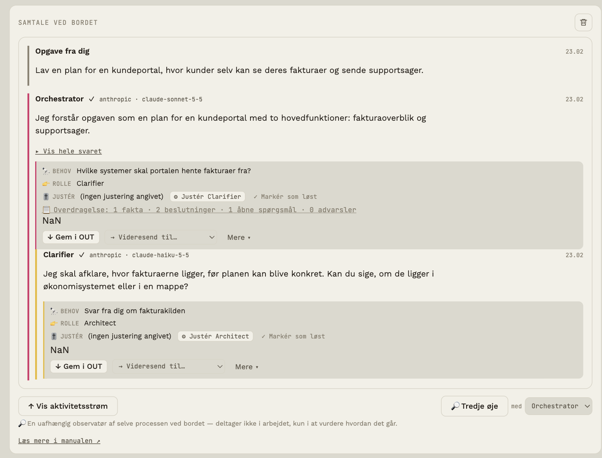
Den fulde samtale får hele bredden under bordet. Her ser du hvert svar med:
- Første sætning som opsummering af, hvordan stolen forstod opgaven. Klik ▸ Vis hele svaret for resten.
- Behovsboksen 🔭👉🎚 med stolens forslag til næste skridt (se Åbne behov og forslag).
- En overdragelseslinje 📋, hvis stolen har afleveret fakta, beslutninger m.m. (se Målinger og overdragelse).
- Handlinger under svaret. De to vigtigste står fremme, resten ligger under Mere ▾:
| Knap | Hvad den gør |
|---|---|
| ↓ Gem i OUT | Fremme. Gemmer svaret som en fil i bordets OUT-mappe. Når svaret er gemt, skifter knappen til ✓ Åbn i OUT (åbner OUT-mappen), og under Mere kan du gemme en ny kopi |
| → Videresend til… | Fremme. Sender svaret til en anden stol; den anbefalede er markeret |
| 💡 Til instruktion | Under Mere. Gør det markerede stykke af svaret (ellers et udkast fra svaret) til en fast instruktion for en stol, efter du har set og rettet teksten |
| 💾 Gem i git | Under Mere. Skriver svaret til en fil i dit GitHub-repo (kun hvis repo og token er sat) |
| Husk | Under Mere. Gemmer svarets beslutninger i bordets hukommelse |
| 🔊 Læs op | Under Mere. Stemmen siger et kort brief om svaret (kun hvis stolen har en stemme) |
Intet bliver gemt i git, før du selv klikker på Gem i git.
Svar, hvor stolen stiller dig et spørgsmål, får mærket ❓ Spørger dig.
Mens et svar er på vej
Når bordet har sendt en forespørgsel til en model, og det første ord endnu ikke er kommet, står der i stolens boble et roligt ventelag: bløde farver i stolens farve med ét ord i midten. Ordet er stolens rolle (Bygger, Gennemgår, Skriver …), eller Kontrollerer, hvis stolen kontrollerer resultatet; en stol med et eget navn uden begreb siger Svarer. Ordet skifter aldrig af sig selv: det viser kun, hvad bordet ved. Laget forsvinder, når første ord kommer, og det findes aldrig, mens bolden ligger hos dig (fx når Beskyttelse venter på dit valg).
Under ⚙ → Hele programmet → Ventelag (Avanceret) kan du vælge udtryk: Farvetone (standard), Pixelmosaik, Pixelsværm, Partikler (3D) eller Kun ordet. Har dit system reducer bevægelse slået til, står laget stille.
Eksportér samtalen
Under ⚙ → Dette bord → Eksportér samtale gemmer du hele samtalen som én Markdown-fil, fx til dokumentation eller en opgave. Filen indeholder:
- Opsætning: hver stols model, mandat, dials, tilføjelser og den fulde instruktion, modellen faktisk får.
- Samtalen med et tidspunkt på hver besked, og hvem der skrev: Opgave fra dig, en stol (med udbyder og model), Videresendt til …, Sendt tilbage til …, system og Tredje øje.
- Hændelser fra bordets logbog (kørsler, kald, behov, kontrol, valg) med tidspunkter og uden beskedtekst.
- Dine indgreb, et udkast til en situationslog: det, du selv gjorde (gav opgaven, startede og stoppede kørslen, skrev til en stol, valgte næste, sendte tilbage, justerede), med kolonner til T/U/O og Hvorfor, som du selv udfylder. Det, stolene eller autopiloten gjorde af sig selv, står ikke her.
Filen indeholder aldrig API-nøgler, adresser eller stemmer. Er Beskyttelse slået til, står teksten, som den er gemt, med pladsholdere i stedet for de skjulte oplysninger. Tidspunkterne er din computers lokale tid.
Ryd samtalen
Papirkurven øverst til højre i samtalepanelet sletter samtalens beskeder for det aktive bord. Første klik gør den rød og viser Ryd?; klik igen inden for tre sekunder for at slette. Det kan ikke fortrydes. Stole og indstillinger bliver.
Hukommelse
Beslutninger og fakta, bordet husker på tværs af opgaver.
Som standard husker en stol kun sin egen samtale. Hukommelsen er en liste over punkter, du vil have bordet til at huske: en beslutning, et budget, en målgruppe. Punkterne lægges i alle stoles instruktion, hver gang de svarer, med besked om at følge dem, medmindre opgaven udtrykkeligt siger andet.
Sådan bruger du den
- Fra et svar: har svaret afleveret beslutninger (linjen ✔ i overdragelsen), får det knappen 🧠 Husk i den fulde samtale. Den gemmer beslutningerne. Dubletter springes over.
- Manuelt: åbn ⚙ → Dette bord og vælg Hukommelse. Skriv et punkt og klik Tilføj.
- Ret og slet: punkterne kan rettes direkte i panelet og slettes.
Højst 30 punkter på hver 300 tegn. Panelet viser, hvor mange tokens hukommelsen omtrent koster pr. kald.
Åbne behov og forslag
Sådan bruger du stolenes egne forslag til næste skridt, uden at miste kontrollen.
Behov
Hver stol afslutter sit svar med tre linjer:
- 🔭 Behov: hvad der stadig mangler, eller hvad der bør ske som det næste.
- 👉 Rolle: hvilken rolle der bedst kan løse det.
- 🎚 Justér: en foreslået ændring af en dial (fx “Nysgerrighed: Til, styrke 8”).
Næste skridt-kortet står lige under samtalen og viser ét emne ad gangen: først det, kun du kan afgøre, så det, du selv justerer, så Tredje øjes åbne valg, så det, appen kan udføre efter din godkendelse, og til sidst forslag til instruktioner. Handlingen sker på kortet. Flere forslag (n) åbner hele oversigten. Kortet viger, mens en pause, en kontrol eller et rute-tilbud venter på dig, så der kun er ét at svare på.
Behovene samles i knappen 📥 Næste skridt (n) øverst. Står der "· 2 kræver dig", er to af dem beslutninger, kun du kan tage; er knappen gul og fed, blokerer noget en igangværende kørsel (kontrollen er ikke bestået, og kørslen holder pause). Næste skridt-listen er delt i fire grupper:
| Gruppe | Betydning |
|---|---|
| Kræver din beslutning | Ingen model eller regel kan afgøre det for dig. Det, der blokerer en kørsel, står øverst med mærket Blokerer kørslen |
| Kan justeres | Stolen er fundet. Du justerer den selv i dens panel |
| Kan udføres efter godkendelse | Tredje øjes forslag (A/B/C), forslag til instruktioner og behov, bordet kan løse med ét klik. Intet sker, før du vælger |
| Observation | Registreret af regler ud fra hændelserne, med beviser (se Tredje øje) |
Næste skridt-listen er en huskeliste til dig og ikke en e-mailindbakke. Appen bygger den selv af det, stolene skriver sidst i deres svar, og af regler. Modellerne ser aldrig listen og kan ikke åbne den. Spørger du en stol om "indbakken" eller "anmeldelser", ved den ikke, hvad du mener. Vil en stol arbejde med dit materiale, skal det ligge i IN-mappen (og stolen skal have Læser IN-mappen slået til), eller du skal skrive det ind i opgaven.
Hvad tæller? Tallet på knappen viser kun det, der hører til den seneste opgave. Behov fra tidligere opgaver ligger samlet nederst under Fra tidligere opgaver. Kræver dig er behov, hvis 👉 Rolle ikke peger på en stol ved bordet (fx "ingen"), så kun du kan afgøre dem. Et behov begynder med VURDERING: (en beslutning om værdier, prioritering eller konsekvenser, som kun du kan tage) eller FAKTA: (noget, en stol eller en fil kan svare på). Det er de vurderinger, der kan få bordet til at holde pause (se Deltag undervejs). Spørgsmål, du har besvaret eller bevidst udeladt (på pilen eller i pausekortet), tæller ikke længere. Skriver en stol "intet" som behov, er der intet behov, og det vises ikke. Står en foreslået justering allerede sådan på stolen, viser kortet ✓ allerede sat i stedet for Gør det for mig.
Oversigten viser kun det nødvendige: hvem, hvad og den ene handling. Rolle, foreslået justering og de øvrige handlinger ligger under Detaljer.
På et behov kan du:
Linjen Justér er modellens egen anmodning i dens svar. Appen ændrer aldrig en dial af sig selv. Kortet siger tydeligt, hvad der er sket:
- Modellen foreslår: Risikosans Til, styrke 6 hos Builder med knapperne ✓ Sæt Risikosans til Til, styrke 6 (sætter dialen med det samme), Lad mig rette (åbner stolen ved Risikosans, så du selv kan justere) og Ikke nu (skjuler behovet uden at ændre noget).
- Risikosans står på Til, styrke 6 hos Builder (hvis dialen allerede står sådan) med OK (skjuler behovet) og Lad mig rette.
- Efter dit valg står der det, der faktisk er tilfældet, og ✓ Løst: enten står på (dialen er sat) eller ikke ændret (du valgte Ikke nu).
Peger behovet ikke på en stol (Rolle ingen), gælder justeringen den stol, der skrev behovet. Har behovet ingen justering, der kan tolkes, er der ⚙ Justér [stol] (åbner stolen) og ✓ Markér som løst.
Under Kræver din beslutning er der to ting mere:
- Foreslår behovet en justering uden at pege på en stol, står den som den primære knap, fx ✨ Slå Nysgerrighed til hos Builder. Den gælder stolen, der skrev behovet, og du kan ændre det igen i stolens panel.
- Er behovet en vurdering, kun du kan afgøre, kan du skrive dit svar direkte på kortet og trykke Send til bordet. Svaret gemmes i beslutningsregistret og følger med i alle overdragelser. Markér som løst er her en stille, sekundær handling, fordi det ikke svarer på noget.
Forslag til instruktioner
Synes du, at en stol bør have en fast tilføjelse til sin instruktion, så markér det stykke i svaret, du vil bruge, og klik 💡 Til instruktion (under Mere). Markerer du intet, får du et udkast: første rigtige sætning efter stolens gentagelse af opgaven, aldrig 🔭/👉/🎚-linjerne og aldrig hele svaret. Forslaget lander under ✨ Forslag øverst, og panelet scroller sig i syne.
- ✨ Formulér som instruktion for mig (valgfri): ét kort modelkald, kun når du trykker. Teksten sendes til den valgte stol og kommer tilbage i feltet som en kort instruktion i bydeform. Prisen står ved knappen, og intet er gemt, før du godkender.
- Godkend: du kan rette teksten og vælge, hvilken stol der får den (ikke nødvendigvis den, svaret kom fra). Den stol, svaret peger på (👉 ROLLE), står først og er mærket (anbefalet); ellers er det stolen, svaret kom fra. Anbefalingen er en regel og kan tage fejl. Den føjes til stolens instruktion som en tilføjelse markeret “godkendt tilføjelse”.
- Afvis: forslaget slettes.
Intet ændres, før du selv godkender.
Adfærd og ikoner
De ti indstillinger og tre ikonrækker, der former hver stols instruktion.
Hver stol kan finjusteres. Indstillingerne oversættes til tekst, som lægges i den systeminstruktion, stolen faktisk sender til sin model. Du kan se den samlede tekst nederst i stolens panel under Vis hele instruktionen, som modellen får.
De ti dials i fire grupper
I stolens panel står dialerne under Opførsel, i fire grupper. Hver gruppe viser, hvor mange der er aktive, og hvilke, uden at du åbner den. Åbn en gruppe for at ændre dem. Hver dial har tilstandene Fra, Til og (hvor det giver mening) Efter behov, en styrke fra 1 til 10 og en valgfri note.
| Gruppe | Dial | Spørgsmålet den svarer på |
|---|---|---|
| Tænkning | 💭 Ræsonnement | Hvor grundigt skal stolen tænke sig om? |
| 💡 Nysgerrighed | Leder den aktivt efter huller og alternativer? | |
| 🪞 Selvtjek | Skal den spørge sig selv “kan jeg have misforstået noget?” | |
| Kritisk vurdering | ⚔ Modsigelse | Hvor tilbøjelig er den til at sige fra? |
| 🚨 Risikosans | Er den opmærksom på konsekvenser og risici? | |
| ❓ Usikkerhed | Siger den, hvor sikker den er, og hvad den ikke ved? | |
| Handling og ansvar | 👣 Selvstændighed | Må den handle selv, eller skal den spørge først? (Kun forslag / Til / Efter behov) |
| ♥ Menneskelig konsekvens | Nævner den, hvem der påvirkes? | |
| 🔧 Må ændre egne regler | Nej / Foreslå / Ja | |
| Ressourcer | 💸 Omkostningsbevidsthed | Holder den svarene korte for at spare forbrug? |
Forudindstillinger og mærker
Øverst i stolens Opførsel kan du vælge en forudindstilling i stedet for at stille ti dials:
| Forudindstilling | Hvad den gør |
|---|---|
| Hurtig | Slukker de seks dials om tænkning og kritik. Hurtigst og billigst |
| Grundig | Tænder Ræsonnement (6), Selvtjek og Usikkerhed |
| Kritisk | Grundig, plus Modsigelse (8) og Risikosans (7) |
En forudindstilling ændrer kun de seks dials (Ræsonnement, Nysgerrighed, Selvtjek, Modsigelse, Risikosans, Usikkerhed) og kun i udkastet: intet gemmes, før du trykker Gem. Selvstændighed, Menneskelig konsekvens, Ret reglerne og Omkostning røres aldrig af en forudindstilling. Står stolen anderledes end alle tre, siger panelet, at det er dine egne indstillinger. De ti dials ligger under Tilpas selv.
Hvad lover et add-on? Hvert er mærket med sin art, fordi det afgør, hvad det kan love:
- Stil: en instruktion i prompten. Et ønske til modellen, ingen garanti. Alle ti dials er stil.
- Kontrol: en separat stol (Kontrollerer resultatet) med en tydelig dom, PASS eller FAIL, der kan stoppe kørslen.
- Regel: noget appen selv håndhæver, fx pauser, kuverten og eget bud først.
Prøv med og uden
Knappen Prøv med og uden … kører den samme opgave to gange gennem stolens model: med dine indstillinger og uden den dial, du vælger (eller uden alle, der er slået til). Du ser de to svar som A og B, uden at vide, hvilket der er hvilket, og vælger A er bedst, B er bedst eller Ingen forskel. Først derefter afsløres det, og du kan beholde dialen eller slå den fra i udkastet.
- Det er to kald til stolens model, kun når du trykker. Antallet står ved knappen. Opgaven går gennem Beskyttelse, hvis den er slået til.
- Svarene gemmes ikke i samtalen. Hændelserne (
preset.applied,tryout.run,tryout.chosen,tryout.decided) har kun valg og antal, aldrig tekst. - Det er ét forsøg. Det viser en tendens, ikke et bevis; en model kan svare forskelligt blot af tilfældigheder. Gentag det på en anden opgave, før du lægger vægt på det.
Tre ikonrækker på stolen, og hvordan de hænger sammen med dials
Ikonerne redigerer du direkte på stolen: hold musen over den. De tæller med i instruktionen.
- Mandat: ✓ Fortsætter selv, uden at spørge dig · ? Spørger dig, når den er i tvivl · ⏸ Stopper altid efter sig selv. Mandatet kan også styre selve forløbet: ✓ fortsætter selv, ? spørger dig ved et spørgsmål, ⏸ stopper altid, så du læser resultatet (det samme som en pause på pilen efter stolen) (se Deltag undervejs)
- Arbejdsform: 🧠 Tænk (analyse og grundighed) · ♥ Omtanke (mennesker og konsekvenser) · 👣 Handling (implementering og tempo)
- Information: ● Sten (faste krav og regler) · ▤ Papir (viden og dokumentation) · ✂ Saks (noget stolen må ændre eller bygge videre på)
Mandat og arbejdsform er genveje til de samme indstillinger som dialerne, så de aldrig kan stå uenige:
| Ikon | Samme som dial |
|---|---|
| 🧠 Tænk | Ræsonnement |
| ♥ Omtanke | Menneskelig konsekvens |
| 👣 Handling og mandatet ✓ ? ⏸ | Selvstændighed |
Ikonet har tre tilstande: fuldt tændt er Til, med stiplet kontur er Efter behov (modellen vælger selv), og slukket er Fra. Nye stole starter med Ræsonnement og Menneskelig konsekvens på Efter behov, så 🧠 og ♥ ser tændt ud uden at være "altid". Sæt dialen til Fra for at slukke dem.
Tænder eller slukker du ikonet, følger dialen med, og omvendt. Ændrer du dialen Selvstændighed i stolens panel, og mandatet derved skifter, skriver appen en note om det og hvorfor. ✓ sætter Selvstændighed til, mens ? og ⏸ sætter den til Kun forslag. Information (●▤✂) hører kun til ikonerne. Efter behov tæller som aktiv og vises som tændt.
Hold musen over en stol
Detaljeboksen viser alle ti dials med deres tilstand (også de slukkede, nedtonet), grupperet som i panelet, plus model, mandat, arbejdsform, information og antal tilføjelser.
Sådan bruger du det
- Start med få indstillinger tændt. Flere dials betyder en længere instruktion og lidt højere forbrug.
- Brug Smag varianter (se Varianter) til at sammenligne, hvad en enkelt dial faktisk gør.
- Lad stolenes egne 🎚-forslag pege dig i retning, men afgør selv.
Historik og tilbagerulning
Hver gang en stols opførsel ændres, noteres det i stolens panel under Historik: hvad der blev ændret (dial, ikon, tilføjelse, kontrolstol, læser IN), hvornår, og hvad der udløste det: Manuelt, Behov (Gør det for mig), Næste skridt, Valgt variant eller Godkendt forslag. Farve, plads og nøgler tæller ikke med.
Ved hver post kan du trykke Gendan til før denne ændring. Stolens dials, ikoner, tilføjelser, kontrolstol og IN-valg sættes tilbage; navn, model og nøgle røres ikke. Selve tilbagerulningen står i historikken som Gendannet, så du kan fortryde den igen. Stolen gemmer de seneste 30 ændringer.
Tredje øje
En uafhængig vurdering af hvordan bordet arbejder.
🔎 Tredje øje er en observatør af processen; den deltager ikke i arbejdet. Den læser hele samtalen og de åbne behov og giver en ærlig vurdering af, hvordan det går: hvad der fungerer, hvor bordet går i ring, og hvad der mangler.
Sådan bruger du det
- Klik 🔎 Tredje øje over samtalen.
- Vælg efter med, hvilken Modelprofil API der skal give Tredje øje regnekraft. Tredje øje har sin egen forbindelse og behøver ikke en stol: automatisk bruges OpenRouter-profilen (en billig model som standard), ellers den første profil med en nøgle. Du kan også vælge en stols model og nøgle, som før. Et valgt Modelprofil API huskes.
- Vurderingen kommer i samtalen, mærket “vurderet af” med den valgte profil eller stol og model.
Tredje øjes udgifter står i Regning og priser som en egen linje, Tredje øje, og er med i bordets samlede regning.
Næste skridt: A, B eller C
Efter sin vurdering foreslår Tredje øje op til tre næste skridt, som du kan vælge imellem. De står i 📥 Næste skridt og under vurderingen i den fulde samtale. Et forslag kan være:
- Giv turen til en stol (“Take turns”).
- Sæt en dial på en stol, fx Modsigelse: Til, styrke 8.
- Tilføj en stol med en rolle fra listen eller en helt ny rolle med egen instruktion. Formularen åbnes udfyldt (med samme nøgle som en eksisterende stol), og stolen oprettes først, når du gemmer.
- Giv en stol et tilvalg, en ny, navngivet instruktion. Tilvalg står i stolens panel under Tilføjelser, og du kan fjerne dem igen.
Intet sker, før du selv trykker Vælg A/B/C. Kortet viser præcis, hvad der vil ske, og den fulde tekst på en ny rolle eller et nyt tilvalg. Ikke nu afviser dem alle. Et nyt Tredje øje-svar erstatter det gamle sæt.
Gode råd
- Vælg gerne en anden model end dem, der arbejder på opgaven; en uafhængig vurdering er mere værd.
- Det koster ét kald, og jo længere samtalen er, jo mere fylder den i kaldet.
- Knappen er slået fra, hvis ingen stol har en gemt API-nøgle.
Observationer (regler uden modelkald)
Ud over vurderingen på knaptryk holder appen selv øje med hændelseslogen. Fundene står i 📥 Næste skridt, under overskriften Observationer, og koster ingenting, fordi de er regler og ikke modelkald. Hvert fund kan åbnes med Vis beviser, som viser de hændelser, der udløste det, og kan skjules med Skjul.
| Fund | Udløses når |
|---|---|
| Samme behov gentages | Samme rolle foreslås mindst tre gange i én opgave |
| Kontrollen fejler gentagne gange | Mindst tre kontroller ikke bestået eller uklare |
| Tilbagesendelser opbrugt | To tilbagesendelser er brugt |
| Mange mislykkede kald | Mindst 40 % af mindst tre kald mislykkedes |
| Samme stol kaldt mange gange | Mindst seks svar fra én stol i én opgave |
| Overdragelsen falder tilbage | Mindst to gange til fuld tekst |
| Prisgrænsen stoppede kørslen | Kørslen blev stoppet af grænsen |
| Du har overstyret en kontrol | Til orientering |
Reglerne ser kun de seneste fem opgaver. De gætter ikke på årsagen; de peger på det, der er sket. Når du beder om en vurdering med 🔎 Tredje øje, følger fundene med, så vurderingen bygger på fakta.
Tre lag: observation, vurdering, forslag
Tredje øje viser tre forskellige slags ting, og de er holdt adskilt, så du kan se, hvad du kan stole på, og hvad der er en mening:
| Lag | Hvad det er | Hvor det kommer fra |
|---|---|---|
| Observation | En registreret hændelse, fx 3 af 3 kald mislykkedes i samme opgave | Regler på hændelseslogen. Ingen model. Hver observation har beviser: de hændelser, der udløste den |
| Vurdering | Modellens mening om, hvordan det går (Modellens vurdering) | En model. Den kan tage fejl og er en vurdering, ikke en kendsgerning |
| Forslag | Op til tre næste skridt (A, B, C), som du kan vælge | Modellens forslag, valideret af appen. Intet ændres, før du vælger |
Hvert forslag viser en konsekvens, før du vælger det: hvad der konkret sker (fx Tester får turen. Intet andet ændres., eller at en dial ændres på en stol, står i stolens historik og kan rulles tilbage). Dialogen med Tredje øje viser de tre lag som mærker øverst og de seneste observationer under dem.
Øjet i hjørnet
Nederst til venstre sidder et lille øje. Det er Tredje øjes måde at sige til, at noget kræver dig, uden at du skal lede efter det. Det markerer kun det, appen faktisk ved, og aldrig noget, den gætter:
- kontrollen er ikke bestået, og kørslen venter på dit valg,
- kørslen holder pause og venter på dit svar,
- prisgrænsen er nået, og kørslen er stoppet,
- en stol mangler API-nøgle (API mangler),
- ting, kun du kan afgøre (samme tal som på Overblik).
Første gang forklarer et lille kort, hvad Tredje øje er. Bagefter er øjet, når intet kræver dig, grønt og blinker blidt: det viser, at Tredje øje er med, og blinket betyder aldrig, at noget skal gøres. Når noget nyt kræver dig, pulserer det nogle få gange og står derefter stille med en markering, til det er løst. Samme tilstand pulserer ikke igen. Et rødt øje betyder, at kørslen står stille og venter på dig.
Tryk på øjet for at komme derhen, hvor det kan afgøres: ind i pausen eller kontrollen, til regningen, til API mangler eller til Næste skridt. Er øjet roligt, åbner trykket selve Tredje øje, så du kan stille et spørgsmål; Overblik ligger stadig i topbaren. Peger du på det, står årsagen som tekst, og skærmlæsere får den at vide, når en ny årsag kommer til. Har dit system reducer bevægelse slået til, pulserer øjet ikke, men markeringen står der stadig.
Du kan skjule øjet under ⚙ → Tredje øje i hjørnet (fra Mere).
Samtale med Tredje øje
Knappen 🔎 Tredje øje er den eneste indgang til Tredje øje. Den åbner en dialog, hvor du kan:
- trykke Vurdér bordet nu (vurderingen skrives i bordets log med forslag A/B/C, som før),
- vælge et af forslagene, skrive eller tale et spørgsmål (🎤), fx om hvordan det går, eller hvad en ændring ville betyde for projektet (ny rolle, anden dial, anden model, at stoppe nu).
Teksten skrives uændret, og stemmen giver en lydbesked. Tredje øjes tekst er den samme som altid. Bagefter laver appen en kort lydbesked på højst ca. 10 sekunder, der siger status og hvad der kræves af dig: om du skal læse teksten, vælge A, B eller C, svare på noget, eller at intet kræves lige nu. Beskeden skrives af den samme model i en lille, separat forespørgsel (et par øre), og teksten vises i dialogen sammen med genvejen Vis teksten ↗, som springer til vurderingen i bordets log.
Spørger du til en ændring, svarer Tredje øje kort og i fast rækkefølge: forventet effekt, risiko og pris, et alternativ og sin anbefaling (og hvad der ville få det til at ændre den). Det skelner mellem det, det kan se, og det, det gætter.
- Der er ingen lydknap: lydbeskeden kommer, når der er en ElevenLabs-nøgle og en stemme til Tredje øje (vælges automatisk første gang). Vil du ikke høre den, så vælg Ingen under Stemme til Tredje øje. Mangler noget, står det under dialogen (med knappen Vælg stemme), og går afspilningen galt, står fejlen der også.
- Samtalen ændrer ingenting. Ændringer gør du selv, hvor du plejer, eller via Næste skridt ovenfor.
- Samtalen ligger ikke i bordets log og indgår ikke i det, stolene eller en vurdering får at se. Ryd samtalen sletter den.
Smag varianter
Kør samme besked med forskellige indstillinger, og vælg det svar, du bedst kan lide.
Ved du ikke, om en stol skal have Modsigelse på 3 eller 9? Så lad den svare på begge dele og sammenlign.
Sådan gør du
- Vælg én stol under Til og skriv din besked (uden at sende).
- Klik 🔀 Smag varianter.
- Vælg den dial, du vil variere, og mindst to tilstande at sammenligne.
- Klik Kør varianter. Stolen svarer parallelt en gang pr. tilstand, med samme besked.
- Læs svarene side om side, og klik ✓ Brug dette svar på det bedste.
Det valgte svar bliver stolens svar i samtalen, og valget noteres i Målinger.
Strategi og arbejdsgraf
Se, hvad der faktisk skete i en kørsel, og sammenlign det med en strategi, du selv vælger.
En strategi er en graf over roller, skrevet som enkle linjer, fx:
Clarifier -> Builder -> Reviewer
Reviewer -> Builder [ved ikke bestået]
Bordet følger ikke strategien af sig selv. Den bruges til to ting: at sammenligne forløbet med, og at give Tredje øje noget at forholde sig til. Der er ingen strategi som standard.
Arbejdsgrafen
Åbn ⚙ → Dette bord → Arbejdsgraf og strategibibliotek ….
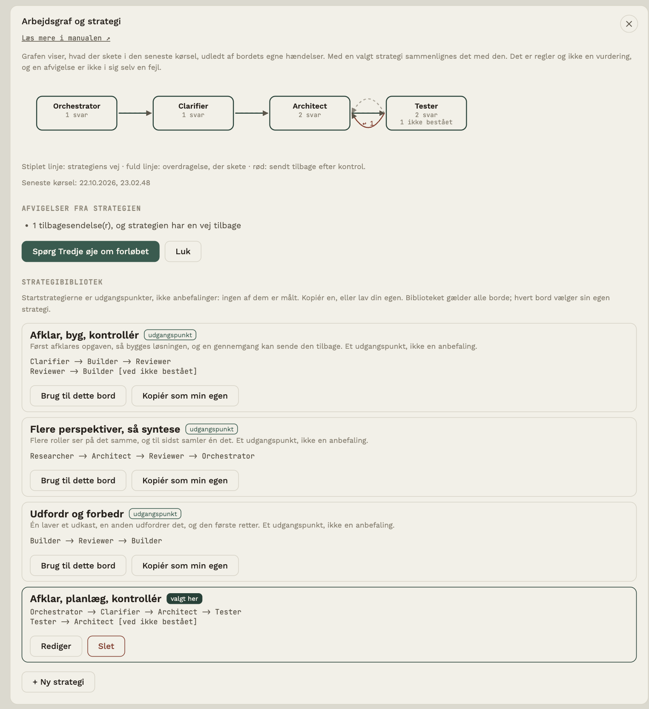
Grafen er udledt af bordets egne hændelser i den seneste kørsel, uden modelkald:
- hver stol er en boks med antal svar og eventuelle kontroller, der ikke bestod,
- en fuld pil er en overdragelse, der skete (med antal, hvis flere),
- en rød bue er en tilbagesendelse efter en kontrol,
- en stiplet pil er strategiens egen vej.
En stiplet boks er en rolle fra strategien, som ikke var med eller ikke har en stol med det navn. En boks med orange kant var med, men står ikke i strategien.
Afvigelser
Med en valgt strategi sammenlignes forløbet efter faste regler: roller uden en stol, stole der ikke var med, stole uden for strategien, en anden rækkefølge end strategiens, overdragelser strategien ikke har, tilbagesendelser (og om strategien har en vej tilbage) og stole, der svarede tre gange eller mere. Det er regler og ikke en vurdering, og en afvigelse er ikke i sig selv en fejl: det kan være præcis det, du ville.
Strategibiblioteket
Under grafen ligger biblioteket. Der er tre startstrategier (Afklar, byg, kontrollér; Flere perspektiver, så syntese; Udfordr og forbedr). De er udgangspunkter og ikke anbefalinger: ingen af dem er målt. De kan kopieres, men ikke ændres. Lav din egen med + Ny strategi:
- skriv roller adskilt af
->, en vej pr. linje, - sæt en forklaring i klammer til sidst på en linje, fx
[ved ikke bestået], - en rolle matcher en stol, der hedder præcis det (store og små bogstaver er ligegyldige),
- højst 12 roller og 30 veje. Er teksten ugyldig, siger appen, hvilken linje der er galt.
Biblioteket gælder alle borde. Hvert bord vælger sin egen strategi, i biblioteket (Brug til dette bord) eller under ⚙ → Dette bord → Strategi (gemmes med Gem).
Tredje øje
Kun når der er valgt en strategi, får Tredje øje en kort tekst med i sin kontekst: strategiens veje, hvad der faktisk skete, antal svar pr. stol og afvigelserne, og beskeden at bruge grafen til at pege på afvigelser uden at opdigte noget. Uden en valgt strategi er Tredje øje uændret. Knappen Spørg Tredje øje om forløbet åbner samtalen med et forslag til spørgsmål.
Hvad logges?
At en strategi blev valgt, gemt eller slettet, og antal roller og veje. Aldrig strategiens navn eller tekst.
IN og OUT
Læg materiale ind til bordet, og få resultater ud som filer, når du beslutter det.
Hvert bord har to mapper på din computer:
- ↑ IN: materiale ind. Notater, tekster, data, udkast.
- ↓ OUT: resultater ud, som filer du kan bruge andre steder.
Mapperne ligger i Dokumenter/Rundbordet/<projektnavn>/IN og /OUT og oprettes, første gang du bruger dem. Omdøber du projektet senere, bliver mappen, hvor den er. Under bordet viser to felter antal filer, og et klik åbner panelet IN og OUT.
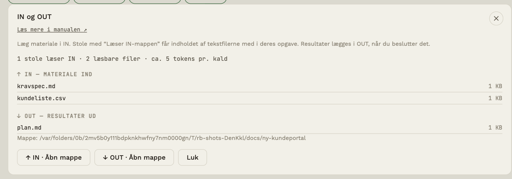
Læg materiale i IN
- Slip filer et vilkårligt sted i vinduet (IN-feltet lyser op), eller klik Åbn mappe og læg dem ind i Finder/Stifinder.
- Læsbare formater:
.txt.md.markdown.csv.tsv.jsonog.pdf. Andre filer kan ligge i IN, men læses ikke (endnu) af stolene. Fra en PDF hentes kun teksten (de første 60 sider); en scannet PDF uden tekstlag giver intet, og filen står så som "ikke medtaget". Billeder og tabeller i en PDF ses ikke. - Grænser: højst 5 MB pr. fil lægges i IN (PDF: 20 MB). Ved læsning tages højst ca. 60 KB pr. fil og 150 KB samlet; længere tekst afkortes.
- En fil, der allerede findes, overskrives aldrig; den nye får “ (2)” i navnet.
Indbakke: en mappe, bordet kun læser fra
Hvert bord har sin egen IN og OUT. Derudover kan et bord have en indbakke: en mappe et sted på din computer, fx en projektmappe eller en mappe, hvor nye dokumenter lander. Vælg den under ⚙ → Dette bord → Indbakke → Vælg mappe ….
- Bordet læser kun. Programmet ændrer, flytter og sletter aldrig noget i indbakken. Det ser kun på filerne i selve mappen (ikke undermapper, skjulte filer og genveje).
- Nyt siden sidst. Under IN/OUT står en flise ↙ INDBAKKE med antallet af nye filer. En fil er ny, første gang du ser den, og igen, hvis den bliver ændret. Mappen tjekkes, når du åbner bordet eller kommer tilbage til programmet.
- Stolene læser ikke herfra. Åbn flisen og vælg Hent til IN ved en fil (eller Hent alle nye til IN), så kopieres den til bordets IN. Så gælder de samme regler som for al anden IN: kun stole med Læser IN-mappen får filen med, og indholdet er data, ikke instruktioner. Markér alt som set nulstiller tælleren uden at kopiere noget.
- Grænser: de samme som for IN (5 MB pr. fil, PDF 20 MB). En fil, der er for stor, kan ikke hentes.
- Hvad logges? At indbakken er sat, fjernet, og hvor mange filer og bytes der blev hentet, aldrig filnavne eller indhold.
- Du kan ikke vælge bordets egen mappe (IN/OUT), en rodmappe eller programmets datamappe.
Billeder i IN
Billeder (.png .jpg .jpeg .webp .gif) kan lægges i IN som andre filer, men behandles anderledes end tekst: de sendes ikke som en tekstblok, men vises direkte til modellen — kun til stole, hvis udbyder faktisk kan se billeder (Anthropic, OpenAI, Google eller en brugerdefineret udbyder). Stole på Groq, Mistral, xAI eller DeepSeek får ikke billederne, kun tekstmaterialet, uanset "Læser IN-mappen". I panelet er et billede mærket billede i stedet for gråtonet som en ulæselig fil.
Grænser: højst 4 billeder og 5 MB pr. billede (samlet højst 15 MB) sendes pr. kald; resten springes stille over. Som med tekst hentes billederne friskt ved hvert kald.
Sæt stole til at læse IN
Åbn en stol og sæt kryds ved Læser IN-mappen. Hver gang stolen svarer, får den indholdet af tekstfilerne — og eventuelle billeder, hvis dens udbyder kan se dem — med som materiale.
Få resultater ud i OUT
Noget kommer først i OUT, når du vælger det. To veje:
- Rollen OUT Writer (gruppen Aflevering). Giv den turen, eller videresend et svar til den. Den skriver resultatet som ren filtekst, og appen gemmer det automatisk i OUT og skriver en note i samtalen: ↓ Gemt i OUT: navn med et link til mappen.
- Knappen ↓ Gem i OUT på et vilkårligt svar i den fulde samtale.
Filer i OUT er altid .md, .txt, .csv eller .json. Appen overskriver aldrig noget; kolliderer navnet, tilføjes “ (2)”.
OUT Writer får desuden beslutningsregistret med og skal forholde sig til hvert punkt: afgjorte spørgsmål med dit svar, åbne i en sektion Åbne spørgsmål (se Deltag undervejs).
Hvad logges?
Kun fakta: at en fil blev lagt i IN, hvor meget materiale der blev sendt til en stol, og at noget blev gemt i OUT. Aldrig filernes indhold (se Målinger og overdragelse).
Sprintplan som fil og CSV
Afslutter en stol (typisk OUT Writer) sit svar med linjen <<SPRINT>> efterfulgt af en JSON-blok med mål, kapacitet og historier, laver appen to filer i OUT i stedet for én:
- en læsbar plan (
.md) med sprintmål, kapacitet, tabel sorteret efter prioritet, acceptkriterier og risici. Overstiger de planlagte point kapaciteten, står det tydeligt, og - en CSV (
.csv) med kolonnerne Title, Description, Priority, Story points, Acceptance criteria, Owner, som kan åbnes i et regneark eller importeres i et planlægningsværktøj. Filen er UTF-8 med BOM, så Excel viser æ, ø og å rigtigt; hvis et importværktøj fejltolker første kolonne, så fjern BOM'en.
Appen kontrollerer planen: kun point 1, 2, 3, 5, 8 og 13 accepteres, dubletter og ugyldige punkter springes over (du får en advarsel), og højst 30 historier. Tekst, der kunne køre som en formel i et regneark (starter med =, +, - eller @), får et apostrof foran. Kan blokken ikke læses, gemmes teksten, som den er, med en note. Mens Beskyttelse er slået til, får filerne de rigtige værdier tilbage.
Målinger og overdragelse
Se hvad bordet har gjort og kostet, og hvordan svar overdrages mellem stole.
Målinger
Åbn ⚙ → Dette bord og vælg Målinger. Panelet viser rene fakta om det aktive bord:
- Totalt antal kald, tokens, pris, gennemsnitlig svartid og fejl, og hvilke slags fejl (fx
http_429for for mange forespørgsler,http_401for ugyldig nøgle,timeout). - En tabel pr. stol og en pr. opgave.
- Overdragelser: hvor mange, hvor mange der faldt tilbage til fuld tekst, og hvor mange tegn der blev sendt.
- Dine handlinger: løste behov, anvendte dials, markerede forslag, valgte varianter.
- Eksportér log (JSON) gemmer det hele i en fil, du selv vælger placeringen af.
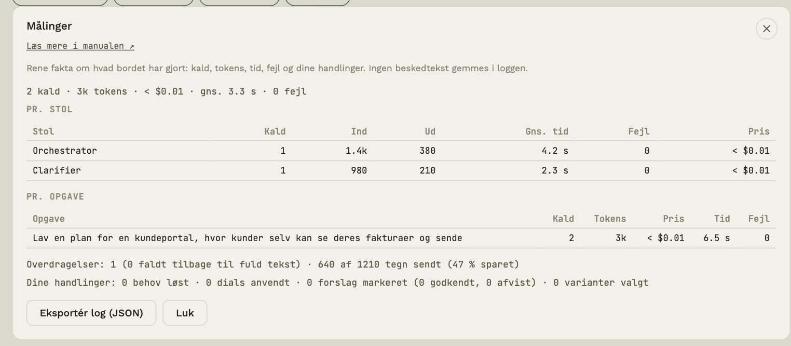
Loggen gemmer de seneste 2000 hændelser pr. bord.
Overdragelse mellem stole
Når bordet sender et svar videre, kan det gøre det på to måder. Standard er fuld tekst. Du kan vælge pr. bord i projektpanelet (klik på navnet midt på bordet):
| Tilstand | Hvad næste stol får |
|---|---|
| Struktureret | Den oprindelige opgave, en kort opsummering og stolens afleverede fakta, beslutninger, åbne spørgsmål, advarsler og forventet output |
| Fuld tekst (standard) | Den oprindelige opgave og hele det forrige svar |
I struktureret tilstand slutter stolene deres svar med op til fem ekstra linjer (📋 Fakta · ✔ Beslutninger · ❓ Åbne spørgsmål · ⚠ Advarsler · 📦 Forventet output). Kan en stol ikke levere dem, sender bordet automatisk hele svaret, så intet går tabt. I samtalen ses en lille linje “📋 Overdragelse: …” under svaret.
Sparer det penge?
Kort svar: nej, ikke på korte kæder. Struktureret overdragelse sender færre tegn videre, men stolene skriver også de ekstra linjer, og outputtokens er dyrere end input. I et forsøg med tre stole (36 kørsler) faldt de videresendte tegn med 38-59 %, men prisen pr. kørsel steg med ca. 30 %, og kvaliteten ændrede sig ikke mærkbart. Værdien ligger i en tydeligere overdragelse, ikke i besparelsen. Forsøget er lille (se evals/RESULTS.md), og længere kæder er ikke testet. Målinger viser tallene for dit bord, så du kan vælge den tilstand, der passer bedst.
Hændelser om dine valg
Når du deltager undervejs, gemmer bordet kun at noget skete, og tal, aldrig din tekst:
| Hændelse | Betyder |
|---|---|
run.paused |
Bordet holdt pause (årsag: spørgsmål, altid eller pil; antal spørgsmål) |
edge.configured |
Du ændrede en pil: pause før næste stol og overdragelsestype (kun valget) |
question.answered / question.skipped |
Du svarede, eller du udelod bevidst (i pausekortet eller på pilen) |
pause.commented |
Du skrev en kommentar ved en pause |
run.resumed |
Kørslen fortsatte efter en pause (antal besvarede og udeladte) |
run.closingcheck |
Afslutningstjek (antal åbne og afgjorte spørgsmål) |
envelope.opened / envelope.sent / envelope.edited / envelope.cancelled |
Kuverten blev vist (antal tegn), sendt, rettet (før og efter), eller annulleret |
preset.applied / tryout.run / tryout.chosen / tryout.decided |
Du valgte en forudindstilling (kun hvilken) og prøvede en dial med og uden (kun valg og antal: om det lykkedes, om du foretrak med, uden eller ingen forskel, og om du beholdt eller slog fra). Aldrig tekst |
update.checked / update.downloaded |
Du tjekkede for en ny version (kun udfaldet: ny, ens, nyere, ingen adgang, ingen forbindelse) og hentede den (kun om det lykkedes, og om checksummen stemte) |
ui.level |
Du skiftede visning (kun niveauet: Enkel, Mere eller Avanceret) |
proposal.rewritten |
En model blev bedt om at formulere et forslag som instruktion (kun om det lykkedes, ingen tekst) |
diff.opened / diff.analysed |
Uenighedsvisningen blev åbnet (antal svar), og en model pegede på forskelle (antal enige, uenige og uklare) |
reflection.scheduled |
Du lavede en kalenderfil til et tilbageblik (tidspunkt, antal spørgsmål, om emnet er med) |
reflection.scheduled |
Du lavede en kalenderfil til et tilbageblik (tidspunkt, antal spørgsmål, om emnet, åbne spørgsmål og afgørelser er med) |
owntake.written / owntake.skipped / owntake.compared |
Eget bud skrevet (længde), udeladt, eller sammenlignet (dit valg) |
De står i den eksporterede log, og panelet Målinger viser dem som tal under Din deltagelse, når der er noget at vise:
- Pauser: hvor mange, hvor mange ved spørgsmål, "altid" og ved en pil, og hvor mange spørgsmål der blev vist.
- Spørgsmål til dig: hvor mange du besvarede, hvor mange du bevidst udelod (og hvor stor en andel det er), hvor mange der blev afgjort på pilen, og kommentarer ved pauser.
- Afslutningstjek: hvor mange kørsler der sluttede med åbne spørgsmål, og hvor mange spørgsmål det i alt var.
- Uenigheder: hvor mange sammenligninger du har lavet.
- Tilbageblik: hvor mange kalenderfiler du har lavet.
- Kuverter: hvor mange der blev vist, sendt (og hvor mange af dem du rettede) og annulleret.
- Eget bud: skrevet, udeladt og sammenlignet, og hvor mange gange dit bud stod, blev justeret eller skiftet.
Tallene siger, hvor meget du er med, ikke om det virkede. En høj andel bevidst udeladte spørgsmål kan betyde, at pauserne er for mange eller spørgsmålene for små. Det er et tegn på at kigge nærmere, ikke et facit.
Priser og forbrug
Hold øje med, hvad kaldene koster.
Rundbordet bruger dine egne API-nøgler, så regningen går direkte til din udbyder. Appen hjælper dig med at se den løbende.
Forbrug
Knappen med beløbet øverst (fx $0.26) viser det samlede forbrug for det aktive bord. Klik på den for en oversigt pr. stol: antal kald og tokens. Bekræftelsen før en kørsel viser også forbruget indtil nu.
Pristabellen
Vælg Priser under ⚙ → Hele programmet. Tabellen har en pris pr. model: dollar pr. million inputtokens og pr. million outputtokens. Den deles af alle stole og borde.
- Tilføj en model manuelt: model-id og de to priser.
- Opdater automatisk henter aktuelle priser fra llmpricing.dev for de modeller, du kender.
- Genberegn ventende priser giver pris til kald, som blev foretaget, før modellen havde en pris.
Sådan holder du regningen nede
- Sæt en prisgrænse pr. kørsel i projektpanelet (se Start bordet).
- Brug små, billige modeller til afklaring og kontrol, og en stærkere kun til det svære.
- Tænd Omkostningsbevidsthed (se Adfærd og ikoner), så svarene bliver korte.
- Lad kun de stole læse IN, der har brug for materialet (se IN og OUT).
- Se i Målinger, hvilken stol og hvilken opgave der bruger mest.
Gem i git
Skriv et godkendt svar til et GitHub-repo med ét klik.
Har du et GitHub-repo til projektet, kan du gemme udvalgte svar direkte deri, som en fil der committes og pushes.
Opsætning
- Klik på projektnavnet midt på bordet for at åbne Projekt.
- Indsæt GitHub-repoets adresse, fx
https://github.com/organisation/repo. Opret nyt repo ↗ åbner GitHub. - Indsæt et personligt adgangstoken (Personal access token) med rettigheden
repo. Opret token ↗ fører dig derhen. Tokenet gemmes krypteret på din computer. - Klik Gem. Øverst står nu GitHub ●.
Brug
I den fulde samtale får hvert svar en knap 💾 Gem i git. Klik på den, når du har læst svaret og vil beholde det: appen skriver svaret til en fil og committer og pusher. Knappen viser kort Gemmer … og derefter commit-koden.
Lad tokenfeltet stå tomt for at slå funktionen fra.
Stemme (ElevenLabs)
Lad en stol læse sine svar højt, med en rigtig stemme.
Rundbordet kan læse en stols svar højt via ElevenLabs, en ekstern tale-til-tale-tjeneste. Det kræver din egen ElevenLabs-konto og nøgle — én nøgle for hele appen, ikke én pr. bord, ligesom pristabellen er fælles for alle borde.
Sådan sætter du det op
- Åbn ⚙ → Hele programmet og vælg Stemme.
- Indsæt din ElevenLabs API-nøgle (Hent nøgle ↗ fører dig til ElevenLabs). Klik Gem.
- Klik Hent stemmer. Appen henter listen over stemmer på din konto.
- Åbn en stol og vælg en stemme under Stemme (ElevenLabs). Gem stolen. (Til Tredje øje vælges en stemme af sig selv; den kan ændres i Stemme-panelet.)
Stole uden en valgt stemme læses ikke op — det er stadig standard.
Sådan bruger du det
Har en stol en stemme, får dens svar en knap 🔊 Læs op i den fulde samtale. Klik på den: knappen viser kort Henter lyd …, derefter Afspiller …, og lyden spilles i appen. Stemmen siger et kort brief om svaret (se Hvad stemmen siger nedenfor), ikke hele teksten.
Hvad stemmen siger
Stemmen læser ikke hele svaret højt. Svar kan være mange linjer kode eller lange tekster, og det er til at læse, ikke til at lytte til. I stedet siger stemmen et kort brief: hvad der er sendt, og hvorfor det er værd at kigge på. Fx "Jeg har skrevet noget kode til dig. Kig det igennem, når du har et øjeblik", "Jeg har lagt nogle valg frem til dig. Vælg det, der passer bedst" eller "Jeg har sendt dig noget at tage stilling til."
For Tredje øje laves en separat lydbesked (se kapitlet om Tredje øje). For stolenes svar vælger appen briefet ud fra svarets art: kode, valg fra Tredje øje, en vurdering, et spørgsmål til dig, et åbent behov, en lang tekst eller en liste. Formuleringen skifter, så det ikke bliver ens hver gang. Meget korte, rene svar (op til ca. 140 tegn) læses, som de er.
Mens stemmen taler, vises et lille kort nederst til højre med bevægelige streger, hvem der taler, og den tekst, stemmen siger. Stop afbryder den med det samme.
For stolenes svar laves briefet lokalt i appen ud fra svarets art, uden et ekstra modelkald, og det indeholder ikke noget af svarets ord (kode, navne, tal). For Tredje øje skriver en lille, separat forespørgsel til den samme model en lydbesked på højst ca. 10 sekunder, der siger status og hvad der kræves af dig (se kapitlet om Tredje øje). Den indeholder ord fra Tredje øjes tekst og sendes til ElevenLabs, og kun når Beskyttelse er slået fra.
Hør stemmerne
Når du har hentet stemmer, står der en ▶ Prøv-knap ved hver af dem. Den læser en fast prøvesætning højt med netop den stemme, så du kan høre forskel, før du vælger den til en stol eller til Tredje øje. Prøvesætningen er ikke dine tekster, og den står i loggen over det sendte ud som et kald til ElevenLabs. Hver prøve koster lidt på din ElevenLabs-konto.
Når en stemme ikke virker
Fejlen står i klart sprog, både ved knappen og i aktivitetsstrømmen. Den hyppigste er, at en stemme er slået fra af sin ejer hos ElevenLabs (det kan ske med delte stemmer fra biblioteket). Så skal du vælge en anden: ⚙ → Hele programmet → Stemme til Tredje øje, eller i stolens panel. Andre årsager, appen kender: stemmen findes ikke, tegnkvoten er brugt op, nøglen er ugyldig eller mangler en rettighed, planen må ikke bruge stemmen, eller for mange kald på én gang. Til sidst står HTTP-koden og ElevenLabs' egen tekst.
Test nøglen
Under Stemme finder du knappen Test nøglen. Den tjekker to ting og skriver resultatet i klartekst: om nøglen kan hente stemmer, og om den må bruge tale-til-tekst (det, der skal til for at tale med Tredje øje). Testen kører også af sig selv, lige efter du har gemt en ny nøgle. Tale-til-tekst-tjekket sender et lydklip på 0,3 sekunders stilhed, så det koster næsten ingenting.
Skriver du en ny API-nøgle til en stol, testes den også med det samme, når du gemmer, og resultatet står som en systemnote i samtalen.
Tal med Tredje øje
- Klik 🔎 Tredje øje. Har du en ElevenLabs-nøgle, vælges en stemme til Tredje øje automatisk første gang (du kan ændre den under Stemme til Tredje øje). Uden en stemme kan du stadig tale, men der kommer ingen lydbesked.
- Klik på 🎤 i dialogen, tal, og klik igen for at stoppe (optagelsen stopper af sig selv efter 90 sekunder).
- Lyden sendes til ElevenLabs, som omsætter den til tekst. Teksten bliver dit spørgsmål til Tredje øje og står i dialogen.
- Tredje øje svarer i teksten, og er der en stemme, siger den bagefter en kort lydbesked.
Første gang beder computeren om lov til at bruge mikrofonen. Siger du tydeligt "vælg A", "B" eller "C", mens der ligger åbne valg fra Tredje øje, viser appen først en bekræftelse med det, den forstod. Intet udføres, før du siger ja. Alt andet, du siger, behandles som et spørgsmål.
Beskyttelse
Skjul navne, e-mails, CPR og andre følsomme oplysninger, før noget sendes til en model.
Når Beskyttelse er slået til, ændrer Rundbordet teksten på din egen computer, før den forlader den: navne, e-mailadresser, CPR-numre, telefonnumre, adresser og IBAN-numre erstattes af stabile pladsholdere som [PERSON_01] og [EMAIL_01]. Modellen ser kun pladsholderne. Når svaret kommer tilbage, sætter appen de rigtige værdier ind igen — kun hos dig.
Tænk på det som: original → beskyttet tekst → model → lokalt gendannet svar.
Sådan slår du det til
Klik på 🛡 Beskyttelse ved siden af beskedfeltet (eller åbn ⚙ → Dette bord og vælg Beskyttelse). Indstillingen gælder pr. bord. Panelet viser en forhåndsvisning: til venstre det, du skriver, til højre det, modellen ville få.
Hvad der skjules
- Sikre fund skjules uden at spørge: e-mail, CPR-nummer, telefonnummer, adresse og IBAN.
- Dine egne ord: navne, firmaer, steder eller sagsnumre, du selv skriver ind i panelet. Store/små bogstaver er ligegyldige, og bøjede former (fx Annes) fanges.
- Mulige efternavne (ord på -sen, fx Hansen) er usikre. Før afsendelsen spørger appen: sæt flueben ved dem, der ikke er navne, så sendes de uændret fremover. Resten skjules og huskes som dine egne ord.
Teksten, der tjekkes, er hele det, der ville blive sendt: din besked, samtalehistorikken, hukommelsen og tekst fra filer i IN (inkl. PDF).
Svar og filer
Svar vises med de rigtige værdier understreget med prikker; hold musen over for at se pladsholderen. Vil du se svaret, som modellen så det, så sæt flueben ved Vis svar, som modellen så dem. Når et svar gemmes i OUT, får filen de rigtige værdier tilbage. En pladsholder, appen ikke kender, eller som modellen har ændret, bliver stående — og du får en advarsel. Appen gætter aldrig.
Hvis noget går galt
- Slipper noget ubeskyttet igennem, stopper appen afsendelsen i stedet for at sende det.
- Fejler forbindelsen, sendes der ikke automatisk igen.
- Modellens svar behandles som utroværdigt: det gendannes kun ved at slå pladsholdere op i din lokale oversigt.
- Oversigten over skjulte værdier sendes aldrig til en model og ligger krypteret på din computer. Glem skjulte værdier sletter den.
Log over det, der er sendt ud
Nederst i Beskyttelse-panelet ligger en log over, hvad der har forladt computeren: til hvilken model (eller ElevenLabs, eller GitHub), hvornår, om det var beskyttet eller i klartekst, og hvor mange oplysninger af hvilken type der var med. Selve værdierne står aldrig i loggen. Loggen føres også, når Beskyttelse er slået fra — så kan du se, om en e-mail eller et CPR-nummer gik ud i klartekst. Billeder kan reglerne ikke læse; de tælles bare med. Hele loggen kan eksporteres under Målinger.
Hvor ligger dine data?
Panelet viser også, hvor dine data kan gå hen på dette bord: de udbydere, dine stole bruger, ElevenLabs hvis du har en nøgle, og GitHub hvis du har sat et repo op. Appen sender ikke andet nogen steder hen og har ingen telemetri.
På computeren gælder: API-nøgler er altid krypteret. Mens Beskyttelse er slået til, er også dine beskeder, opgavetekster, hukommelse og skjulte værdier krypteret i konfigurationsfilen. Slår du den fra, gemmes beskeder igen i klartekst. Sikkerhedskopierne (.bak) er den forrige gemte version og kan derfor indeholde klartekst fra før. Filer i IN og OUT ligger som almindelige filer i Dokumenter og er ikke krypteret.
Det her kan den ikke
- Billeder i IN sendes ikke, mens Beskyttelse er slået til, fordi tekstregler ikke kan læse billeder.
- Oplæsning (stemme) er slået fra, mens Beskyttelse er på.
- Gem i git gemmer svaret med pladsholdere.
- Reglerne er udviklet til danske data. Andre sprog og formater kan slippe igennem.
Sprog
Dansk og engelsk i hele appen.
Vælg Sprog under ⚙ → Hele programmet: Dansk eller English. Valget gælder:
- hele brugerfladen og appens menuer,
- de faste instruktioner, stolene får sendt (roller, dials, overdragelse),
- denne manual, som åbner på det valgte sprog.
Skifter du sprog, mens manualen er åben, indlæses den på det nye sprog.
Dine egne beskeder og stolenes svar skriver du og modellerne på det sprog, I vælger; sproget i appen begrænser det ikke.
Udseende: lyst eller mørkt
Under ⚙ → Hele programmet → Udseende vælger du Følg systemet, Lys eller Mørk. Valget gælder hele appen og manualen. På nogle Linux-skriveborde (fx Hyprland) kan appen ikke se, om systemet er mørkt, og så er det her valg den sikre vej: vælg Mørk selv. Udskrift og PDF af manualen er altid lyse.
Indstillinger
Det, der gælder ét bord, holdt adskilt fra det, der gælder hele programmet.
Åbn ⚙ øverst til højre. Panelet har to faner, og et bånd øverst på hver fane siger, hvad den gælder for:
| Fane | Gælder | Indeholder |
|---|---|---|
| Dette bord | kun det aktive bord | projektnavn, visning af bordet, hvem tager næste, overdragelse, prisgrænse, GitHub, bordets data (Hukommelse, Beskyttelse, Målinger, Bordfil) og Slet bordet |
| Hele programmet | alle borde | udseende, sprog, Modelprofiler API, Priser, Stemme, Brugermanual, Dine borde, Dine roller, version |
Panelet husker, hvilken fane du sidst brugte.
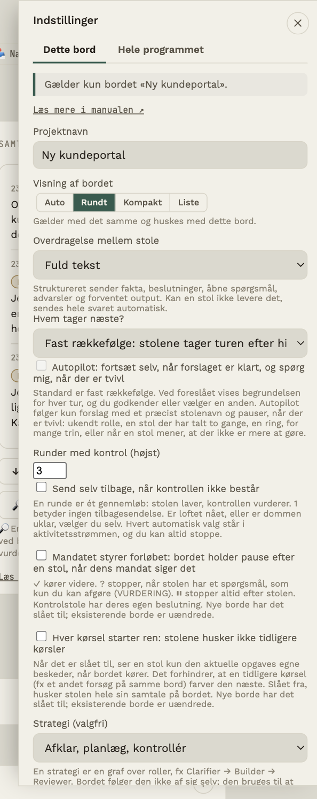 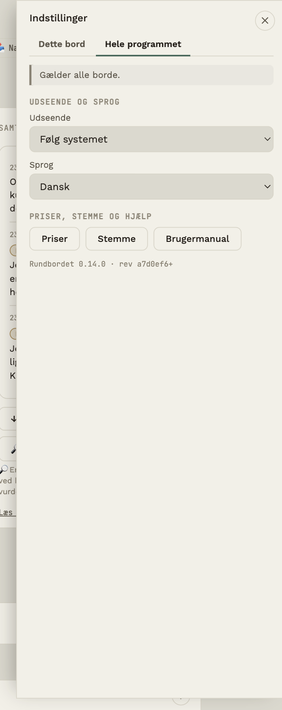
Forløbet: pause og ren kontekst
Under Dette bord står fire valg, der ændrer, hvordan en kørsel forløber:
- Mandatet styrer forløbet: bordet holder pause efter en stol, når dens mandat (✓ ? ⏸) siger det. Se Deltag undervejs. Nye borde har det slået til; eksisterende borde er uændrede.
- Se og redigér kuverten: bordet stopper før hver overdragelse og viser præcis den tekst, næste stol får, så du kan rette den. Se Deltag undervejs.
- Eget bud først: startbekræftelsen får et felt til dit eget bud, som vises ved siden af bordets resultat bagefter. Se Deltag undervejs.
- Hver kørsel starter ren: stolene husker ikke tidligere kørsler.
Modelprofiler API: udbyder og nøgle ét sted
Under ⚙ → Hele programmet → Modelprofiler API … (den vises på alle niveauer, også Enkel) sætter du udbyder og nøgle op én gang. Hver stol vælger en profil i sit panel (Modelprofil API) og vælger selv sin model. Nøglen skrives aldrig på stolen.
- Ændrer du profilen, følger alle stole med. Skifter du nøgle ét sted, gælder det alle de stole, der bruger profilen. Lader du nøglefeltet stå tomt ved en ændring, beholdes den gamle nøgle. Profilens standardmodel er valgfri og bruges kun af en stol, der ikke selv har en model.
- Mangler API, starter bordet ikke. Før en kørsel tjekkes det, at alle stole har en profil med nøgle og en model. Ellers siger appen, hvad der mangler, og fører dig til stolen eller profilerne. Et banner over beskedfeltet viser det hele tiden, og der sendes intet til nogen model, før du selv trykker Start.
- Fra stolens panel kan du sætte en profil op uden at miste det, du har skrevet dér; den nye profil vælges bagefter.
- Nøglen ligger kun i profilen, krypteret på din computer, og stolen gemmes uden nøgle på disken. Den sendes kun til udbyderen.
- Ældre stole: havde en stol sin egen nøgle, flyttes den ved første start af denne version til en profil (én pr. udbyder og nøgle, fx OpenRouter), og stolen peger på den. Stolens model bevares, og der tages en sikkerhedskopi af opsætningen først (
rundbordet-config.json.pre-v4.baki appens datamappe). - Sletter du en profil, beholder de stole, der brugte den, deres opsætning (udbyder, model og nøgle), og peger ikke længere på en profil. Første klik på Slet beder om en bekræftelse og siger, hvor mange stole det rammer.
- Bordfiler gemmer udbyder og model som før, aldrig nøglen.
Dine roller: begreb og rollenavn
En stol har et begreb (hvad den er, fx Builder eller OUT Writer) og et valgfrit rollenavn. Rollenavnet står lige under begrebet i stolens panel og er tomt som standard; skriver du et, bruges det i stedet for begrebet overalt på bordet. Begrebet virker stadig: en stol med begrebet OUT Writer afleverer i OUT, uanset hvad den hedder.
Under ⚙ → Hele programmet → Dine roller gemmer du dine egne roller (rollenavn og begreb), så du kan vælge dem igen på alle stole og borde. De står også som en egen gruppe, Dine roller, i rollelisten og i vælgeren, når du tilføjer en stol, og i stolens panel kan du gemme den aktuelle rolle med Gem rolle i biblioteket. Det vises på alle niveauer.
Dine borde: omdøb, dublér, backup, gendan og slet
Under ⚙ → Hele programmet → Dine borde ser du alle dine borde med antal stole, antal beskeder og hvornår hvert bord sidst blev brugt. Det vises på alle niveauer.
- Gem som fil gemmer ét bord som en læsbar fil (JSON) det sted, du vælger. Filen har bordets opsætning og samtale, som de er gemt. Den indeholder aldrig API-nøgler, tokens eller adresser.
- Åbn backup … gendanner en backupfil som et nyt bord; dit eksisterende bord røres ikke. Du ser først, hvad filen indeholder (stole, antal beskeder, huskede ting og advarsler), og intet oprettes, før du siger ja. Samtalen og hukommelsen kommer tilbage, og samtalen med Tredje øje er stadig en samtale for sig. En backup har ingen nøgler, så stolene står med API mangler, til du vælger en Modelprofil API. Hedder bordet allerede det samme, får det nye bord endelsen (gendannet). Var Beskyttelse slået til, er beskederne gemt med pladsholdere, som ikke kan gendannes.
- Omdøb lader dig rette bordets navn direkte i listen. Enter gemmer, Escape fortryder. Navnet må ikke være tomt eller findes i forvejen.
- Dublér laver en kopi af opsætningen: stole, instrukser, kontrol, runder og Modelprofil API. Kopien har ingen samtale, ingen hukommelse, ingen målinger og ingen GitHub-adgang, og den bliver det åbne bord. Hedder bordet Mit bord, hedder kopien Mit bord (kopi).
- Slet … fjerner et bord for altid med stole, samtale, målinger og hukommelse. Du skal skrive bordets navn for at bekræfte, og Gem backup først står lige ved siden af. Filer i IN og OUT på disken røres ikke. Det sidste bord kan ikke slettes.
Visning: Enkel, Mere eller Avanceret
Vælgeren øverst til højre (ved siden af regningen) styrer, hvor meget der vises. Intet er fjernet; det er kun en anden standard.
| Niveau | Hvad der vises |
|---|---|
| Enkel | Samtalen, bordet, Næste skridt, regningen, Beskyttelse, Modelprofiler API, Dine borde (backup og sletning) og indstillingerne for navn, visning, sprog og udseende. Til dig, der bare vil i gang |
| Mere | Dertil Tilbageblik, ⚖ Uenigheder, Tredje øje, Hukommelse, Stemme, den fulde samtalevisning og indstillingerne for pauser, eget bud først, kuverten og hvem der tager næste |
| Avanceret | Alt, også dials, stolens historik, Pristabel, Målinger, Bordfil, eksport, varianter, runder, strategi og ren kontekst |
Pauser, kontrol, spørgsmål og andre paneler, der åbner af sig selv, vises uanset niveau. Har du allerede brugt appen, står den på Avanceret, så intet forsvinder, når du opdaterer; kun en helt ny installation starter på Enkel. Valget gælder hele appen. Hændelsen ui.level har kun niveauet.
Bordets data: fire paneler som faner
Hukommelse, Beskyttelse, Målinger og Bordfil åbner som faner i ét sted i stedet for fire løse vinduer. Du åbner dem som før (⚙ → Dette bord → Bordets data), og fanelinjen over panelet lader dig skifte mellem dem med et klik eller med piletasterne. Kun ét er åbent ad gangen. Hvert panel virker som før og lukkes med sin ✕ (Beskyttelse med sin Luk-knap, da et klik udenfor ikke lukker den). I Enkel vises kun fanen Beskyttelse, i Mere også Hukommelse, og i Avanceret alle fire.
Visning af bordet
Auto, Rundt, Kompakt og Liste vælges under Dette bord og gælder kun det bord. Et bord kan altså stå som liste, mens et andet står rundt. Valget virker med det samme og gemmes sammen med bordet. Hvad de fire betyder, står i kapitlet Bordet og stolene.
Nyt bord og Hurtig start
Ved siden af bordvælgeren øverst står et +. Det viser valgene direkte: et opgavekort, Få et forslag til min opgave, Hurtig start (OpenRouter) eller et tomt bord. Der oprettes intet, før du selv har valgt og startet.
Slet bordet
Nederst under Dette bord ligger en rød faresone. Slet bordet … kræver, at du skriver bordets navn, før den sidste knap kan trykkes. Det forhindrer, at man sletter det forkerte bord ved et uheld. Sletningen fjerner bordets stole, samtale, målinger og hukommelse og kan ikke fortrydes. Filer i IN og OUT på disken røres ikke. Det sidste bord kan ikke slettes.
Lukke et panel
Hvert panel har en ✕ øverst til højre, som altid er synlig, også når panelet ruller. Et klik på et tomt sted ved siden af lukker panelet, hvis du ikke har ændret noget i det. Har du skrevet eller valgt noget, lukker et klik udenfor ikke: panelet viser Ikke gemt og blinker, og klikket udføres ikke, før du har valgt Gem eller Annullér (eller ✕, som annullerer).
Gem eller med det samme?
Bordets tekstfelter (navn, GitHub, prisgrænse, hvem tager næste, overdragelse) gemmes med Gem. Visning, udseende og sprog virker med det samme.
Genveje
Hurtige veje rundt i appen.
| Genvej | Hvad den gør |
|---|---|
| F1 | Åbner manualen |
| ⌘+Enter (Mac) · Ctrl+Enter (Windows) | Sender beskeden i skrivefeltet, også i dialogen med Tredje øje |
| ⌘++ / ⌘+− / ⌘+0 | Zoom ind / ud / normal størrelse (Vis-menuen) |
| ⌘+Q | Afslutter appen |
Manualen kan også åbnes med ?-knappen øverst, med Brugermanual under ⚙ → Hele programmet, i menuen Hjælp, og med “Læs mere i manualen”-linkene i panelerne.
Fejlfinding og FAQ
Løsninger på de mest almindelige problemer.
En stol svarer ikke
Klik på stolen og brug Test API. Typiske årsager:
| Besked | Løsning |
|---|---|
| Ugyldig nøgle / 401 / 403 | Nøglen er forkert, udløbet eller uden adgang til modellen. Indsæt en ny. |
| Ingen credits / kvoten er brugt op (HTTP 402, eller 429 med insufficient_quota) | Kontoen hos udbyderen har ikke flere credits. Fyld op eller tjek forbruget hos udbyderen; beskeden siger, hvor, når stedet er kendt. Bordet prøver ikke igen, fordi det ikke hjælper. |
| Model findes ikke / 404 | Modelnavnet er stavet forkert eller udfaset. Brug Hent modeller. |
| 429 / 5xx / timeout | Forbigående: bordet prøver selv igen op til to gange under en kørsel. Hjælper det ikke, så vent lidt eller vælg en anden model. |
| Ingen forbindelse | Tjek internettet; udbyderen kan også have driftsforstyrrelser. |
| “ingen gemt API-nøgle” | Stolen har ingen nøgle. Åbn den og indsæt en. |
Beskeden fra appen siger i klart sprog, hvad der gik galt og hvad du kan gøre, og viser til sidst HTTP-koden og udbyderens egen tekst (og anmodnings-id, hvis udbyderen sender et), så du kan bruge den, hvis du skriver til udbyderens support.
Fejl og svartider kan du se i Målinger.
Ingen eller kun nogle stole svarede
Efter en kørsel siger statuslinjen kun, hvad der er sket. Svarede ikke alle stole, står det der (fx 1 af 2 stole svarede ikke), og årsagen står som en note i samtalen for hver stol. Dit spørgsmål lægges tilbage i beskedfeltet, så du kan rette fejlen (en forkert nøgle, en model, der ikke findes, en afbrudt forbindelse, en opbrugt prisgrænse eller et tomt abonnement hos udbyderen) og trykke Send igen. Bekræftelsen viser, hvad der sendes og hvad det forventes at koste, før noget går afsted, så der ikke sendes noget to gange ved en fejl. Svarede ingen stol, er der intet resultat.
Min opsætning kunne ikke læses
Opsætningen skrives først til en midlertidig fil og flyttes så på plads, så en afbrudt skrivning ikke kan ødelægge den. Kan filen alligevel ikke læses, når programmet starter, bruger det den forrige gemte version (så din seneste ændring kan mangle), eller starter med et tomt bord, hvis der ingen sikkerhedskopi er, og siger det med en besked øverst. Beskeden viser, hvor kopien af den ulæselige fil ligger; intet er slettet. Gem kopien, til du har fået hjælp.
Jeg sidder fast
Hvis noget ikke giver mening, eller du ikke ved, hvad du skal gøre nu: tryk Jeg sidder fast øverst. Bordet laver en kort statusbesked om, hvor du var og hvad der skete, så den, du sender den til, kan se, hvad der gik galt.
- Du kan læse hele beskeden, før du bruger den. Du kan skrive en sætning med dine egne ord om, hvad du prøvede at gøre.
- Der står ingen af dine tekster i den: ingen beskeder, bud eller opgaver, ingen nøgler, ingen filnavne og ingen navne på dine stole. Kun version, hvilke paneler der var åbne, hvilke knapper du trykkede på (kun deres id), faste hændelser og tal.
- Intet sendes af sig selv. Du kopierer beskeden eller gemmer den som fil og sender den, hvor du vil.
- Trinene gemmes kun, mens appen er åben, og kun på din computer.
Installer på Linux (fx Omarchy)
Linux-udgaven er en beta. Den er afprøvet på Omarchy (Arch med Hyprland) og virker der, og testes i en Arch-container. Det er ikke dokumentation for andre Linux-distributioner, og kun processoren x64 er med. Skriv, hvis noget ikke virker.
Fra en pakke (.tar.xz):
- Tjek filen med
sha256sum Rundbordet-<version>-x64.tar.xzog sammenlign med den checksum, du fik sammen med filen. - Pak ud og installer:
tar xf Rundbordet-<version>-x64.tar.xz
sudo mv Rundbordet-<version>-x64 /opt/rundbordet
sudo ln -s /opt/rundbordet/rundbordet /usr/local/bin/rundbordet
sudo cp -r /opt/rundbordet/share/icons/hicolor /usr/share/icons/
sudo cp /opt/rundbordet/share/rundbordet.desktop /usr/share/applications/
- Start
rundbordet. Til nøglerne skal du bruge en nøglering, se Linux: nøglering.
Klager appen over «SUID sandbox helper», kan du som nødløsning starte den med rundbordet --no-sandbox.
Fra kildekoden (kræver git, Node og npm samt adgang til repoet): git clone, derefter npm ci og npm start i mappen.
Vinduet hedder rundbordet, så en Hyprland-regel som windowrule = float, class:^(rundbordet)$ kan finde det.
Linux (fx Omarchy): nøglering
På Linux gemmer appen API-nøgler i systemets nøglering (Secret Service, fx gnome-keyring). Findes der ingen, viser appen en rød advarsel under ⚙ → Hele programmet og i Beskyttelse-panelet, og nøglerne er ikke ordentligt beskyttet. Installér og start en nøglering, og start appen igen.
Vær opmærksom på, at nogle opsætninger logger ind automatisk og bruger en nøglering uden adgangskode (det gør Omarchy som standard). Så ligger nøglerne reelt i klartekst i din hjemmemappe, og det, der beskytter dem, er diskkrypteringen. Slå den til, hvis den ikke er det.
Spørgsmål
Jeg hører ikke Tredje øje. Lydbeskeden kræver en ElevenLabs-nøgle (⚙ → Hele programmet → Stemme), en valgt stemme til Tredje øje og at Beskyttelse er slået fra. Mangler noget, står det under dialogen, med en knap til at vælge stemme; går afspilningen galt (fx forbrugsgrænse hos ElevenLabs), står fejlen der også. Brug Test nøglen og ▶ Prøv under Stemme for at se, om nøgle og stemme virker.
Hvor gemmes mine data? Lokalt på din computer, i appens datamappe: på Mac ~/Library/Application Support/rundbordet-app/, på Windows %APPDATA%\rundbordet-app\. Filen hedder rundbordet-config.json. Dine IN/OUT-filer ligger i Dokumenter/Rundbordet/.
Er mine API-nøgler sikre? De krypteres med styresystemets nøglering (macOS Nøglering, Windows DPAPI) og sendes kun direkte til den udbyder, nøglen hører til. Første gang kan Mac'en spørge, om appen må bruge nøgleringen; svar Tillad.
Kan jeg tage mine data med til en anden computer? Kopiér rundbordet-config.json. Nøglerne er krypteret til den enkelte computer og skal indtastes igen. Du kan også eksportere en måling som JSON (se Målinger).
Hvad sker der ved en opdatering? Installer den nye version oven på den gamle; dine borde bevares. Før en ændring af dataformatet laver appen selv en sikkerhedskopi (.pre-vN.bak) ved siden af filen. Sikkerhedskopierne kan indeholde gamle, ukrypterede nøgler fra tidligere versioner; slet dem, når du er tryg.
Mac siger, at appen ikke kan åbnes, fordi udvikleren ikke kan bekræftes. Version 0.x er endnu ikke signeret hos Apple. På macOS 15 og nyere: tryk Færdig, åbn Systemindstillinger → Anonymitet og sikkerhed, rul ned til Sikkerhed, tryk Åbn alligevel ved Rundbordet, og bekræft med din adgangskode eller Touch ID. På ældre macOS kan du i stedet højreklikke på appen, vælge Åbn og bekræfte. Du skal kun gøre det første gang.
Skærmen er tom ved opstart. Luk appen og åbn den igen. Hvis en dialog fra nøgleringen ligger bag andre vinduer, så find og besvar den. Vedvarer det, så notér version og revision fra ⚙ → Hele programmet, når du henvender dig.
Konfigurationsfilen kan ikke læses. Appen lægger den urørt ved siden af som rundbordet-config.json.unreadable-… og starter forfra, så intet overskrives.
Kan jeg bruge lokale modeller? Ja, hvis de tilbyder et OpenAI-kompatibelt API: vælg Andet (OpenAI-kompatibel) og skriv base-URL'en.
Bordet stoppede midt i en kørsel. Statuslinjen siger hvorfor. Det kan være en pause (mandatet ? eller ⏸; pausekortet står ved bordet), en kontrolstol, der ikke bestod, prisgrænsen, eller at du trykkede Stop.
Bordet venter på en kuvert. Er Se og redigér kuverten slået til under ⚙ → Dette bord, stopper bordet før hver overdragelse. Tryk Send kuverten (eller Stop kørslen). Vil du ikke have det, så slå indstillingen fra.
Der kommer ingen pause, selvom en stol har ?. Tjek, at Mandatet styrer forløbet er slået til under ⚙ → Dette bord (eksisterende borde har det slået fra), at stolens spørgsmål begynder med VURDERING: (eller ikke peger på en stol), og at det ikke er den sidste stol. Efter den sidste stol er der ingen pause. Se Deltag undervejs.
Hvad betyder mærket på pilen? Et gult tal er åbne spørgsmål til dig, rødt betyder, at bordet venter på dig i pausekortet, og et grønt ✓ betyder, at spørgsmålet er afgjort. Tryk på pilen for at svare.
Jeg ser ikke sammenligningen med mit eget bud. Den vises kun, når Eget bud først er slået til, du skrev et bud (et tomt felt er en bevidst udeladelse), og kørslen blev gennemført (ikke stoppet).
Hvorfor ser stolene ikke mit eget bud? Det er bevidst: så bordets resultat er et uafhængigt bud, du kan sammenligne med. Vil du have, at en stol bruger det, så skriv det i opgaven eller i et svar i pausekortet.
Ordliste
De ord, appen bruger.
| Ord | Betydning |
|---|---|
| Bord | Et projekt: en samling stole, en samtale og indstillinger. Du kan have flere borde. |
| Stol | En plads ved bordet med en rolle, en model og en API-nøgle. |
| Rolle | Stolens navn og udgangspunkt, fx Clarifier. |
| Tur / krone | Markør for hvilken stol der står for tur. |
| Kørsel | Bordet går rundt i alle stole på én opgave. |
| Opgave | Det, du skriver til bordet; sendes uændret med i hver stols kald. |
| Dial | En af ti adfærdsindstillinger med tilstand og styrke 1-10. |
| Ikon | Mandat, arbejdsform eller information; vises på stolen og tæller med i instruktionen. |
| Systeminstruktion | Den samlede tekst, en stol får sendt før din besked. |
| Behov | Stolens forslag til, hvad der mangler, hvem der kan løse det, og hvad der kan justeres (🔭👉🎚). |
| Forslag | En markeret besked, der kan blive en fast tilføjelse til en stols instruktion, når du godkender. |
| Overdragelse | Det, en stol afleverer til den næste: fakta, beslutninger, åbne spørgsmål, advarsler, forventet output. |
| Opgaveanker | Den oprindelige opgave, som følger med i hvert led, så den ikke forsvinder. |
| Visning | Bordet kan vises rundt, kompakt eller som liste. Auto vælger efter bredden. |
| Statusord | Det, en stol viser om sig selv: Arbejder, Har turen, Næste i rækken, Færdig, Kontrol ikke bestået, Behov til dig m.fl. Kun det, appen kan dokumentere. |
| Lydbesked | En kort besked (højst ca. 10 sekunder), Tredje øje siger om status og hvad der kræves af dig. |
| Stemme | En stemme fra ElevenLabs, tildelt en stol, så dens svar kan læses højt. |
| Kontrolstol | En stol, der vurderer forrige arbejde og giver dom: bestået eller ikke bestået. |
| Tilbagesendelse | Arbejdet sendes tilbage til en tidligere stol efter en kontrol, der ikke bestod: af dig, eller af sig selv, hvis du har slået runder til. |
| Runde | Ét gennemløb af arbejde og kontrol. Ved ikke bestået kan bordet sende tilbage, op til et loft. |
| Hukommelse | Punkter, du vil have bordet til at huske; lægges i alle stoles instruktion. |
| Observation | Fund fra regler på hændelseslogen, med beviser; koster ingen modelkald. |
| Tredje øje | Uafhængig vurdering af processen ved bordet. |
| Variant | Et af flere parallelle svar med forskellig dial-indstilling. |
| IN / OUT | Mapper til materiale ind og resultater ud. |
| OUT Writer | Rolle, der skriver resultatet som fil i OUT. |
| Token | Måleenhed for tekst hos AI-udbydere; prisen regnes pr. million tokens. |
| Revision | Kortkoden for den præcise programversion, vist ved siden af versionsnummeret. |
| Beskyttelse | Skjuler følsomme oplysninger lokalt, før teksten sendes til en model, og gendanner dem i svaret. |
| Pladsholder | Stabil erstatning som [PERSON_01], som modellen ser i stedet for den rigtige værdi. |
| Mandat | Ikon på stolen: ✓ kør videre, ? stop ved spørgsmål til dig, ⏸ stop altid efter stolen. Styrer forløbet, når Mandatet styrer forløbet er slået til. |
| Pause / pausekort | Bordet holder pause efter en stol og viser dens spørgsmål til dig, med felt til dit svar. |
| Spørgsmål til dig | Et behov, der begynder med VURDERING: eller ikke peger på en stol, så kun du kan afgøre det. Et behov, der begynder med FAKTA:, kan en stol eller en fil svare på. |
| Pil | Forbindelsen mellem to stole. Viser overdragelsen og har et mærke, når der er åbne spørgsmål. |
| Beslutningsregister | Dine afgørelser og de åbne spørgsmål i en opgave. Følger med i hver overdragelse. |
| Afslutningstjek | Efter en kørsel: antal og liste over åbne spørgsmål (regler, ingen model). |
| Pil-indstilling | Pause før næste stol og overdragelsestype for en bestemt pil. Findes i pilens panel. |
| Modelprofil API | Udbyder, model og nøgle sat op ét sted. En stol kan pege på en profil, og ændres profilen, følger stolen med. |
| Uenighed | Et punkt, hvor to svar siger noget forskelligt. Du kan lade en model pege på dem og selv tage stilling. |
| Tilbageblik | En kalenderfil (.ics) med refleksionsspørgsmål, der minder dig om at se tilbage på en beslutning. Appen sender intet. |
| Kuvert | Den tekst, næste stol får: opgaven, forrige svar, beslutningsregistret og dine noter. Kan ses og rettes, før den sendes. |
| Eget bud | Dit eget svar, skrevet før bordet kører og vist ved siden af resultatet. Stolene ser det ikke. |
| Skabelon | Et færdigt bord (roller, mandater, instruktioner) med et mærke for, hvor meget du er med. |
Om Rundbordet
Version, privatliv og ændringer.
Version
Denne manual hører til Rundbordet 0.41.0 (revision 005a873). Versionen står også nederst under ⚙ → Hele programmet og i Om Rundbordet.
Versionsnumre følger formen HOVED.MINDRE.RETTELSE: en ny rettelse fikser fejl, en ny mindre version tilføjer funktioner, og en ny hovedversion kan ændre, hvordan appen bruges. Revisionen peger på den præcise kode, versionen blev bygget af.
Privatliv
- Dine borde, beskeder og indstillinger gemmes kun på din computer.
- API-nøgler krypteres med styresystemets nøglering og sendes kun til den udbyder, de hører til.
- Appen sender ingen målinger eller brugsdata til os. Målinger i appen er en lokal log, som kun du kan eksportere.
- Dine beskeder og materiale sendes til de AI-udbydere, du selv har sat på stolene, og er underlagt deres vilkår.
Ændringer
Format følger Keep a Changelog, versioner følger SemVer.
[Ikke udgivet]
[0.41.0] – 2026-11-09
Ændret
- Rettet: feltet til Tredje øje i samtalen manglede sin tekst til skærmlæsere (nøglen
talkInputLabelfandtes ikke). En ny test sikrer, at alle tekster findes på både dansk og engelsk, og at ingen tekstnøgle defineres to gange. - Download-siden og manualen passer til forretningsmodellen og til det, der er afprøvet. Siden (genereret af
scripts/build-web.js) beskriver nu hver for sig: gratis brug (også uden licens), egen API-nøgle og egne udgifter, opdateringslicens (engangsbetalt; adgang til opdateringsfunktionen i appen) og betalte introduktionsforløb, uden opfundne priser, betalingslink eller vilkår. Linux nævnes som afprøvet på Omarchy (x64), ikke som dokumentation for andre distributioner. Teksten «licens og pris er ikke besluttet» er fjernet. - Forslaget i startguiden forklarer sig med almindelige ord: Sådan går det (bordtypens egen beskrivelse), hvor mange stole der kaldes og hvad du får ud af det, ud over begrundelsen og om forslaget bygger på faste regler eller en models vurdering.
- Ærlig status efter en fejl. Efter en kørsel stod der «Færdig — alle stole har svaret», selv når nogle stole ikke svarede. Nu siger statuslinjen, hvor mange der ikke svarede (eller at ingen gjorde, og der intet resultat er), og dit spørgsmål lægges tilbage i beskedfeltet, så du kan prøve igen uden at skrive det om. Resultatkortet vises kun, når der er et svar.
- Pris og nøgle forklares, og bekræftelsen før start viser et skøn. Under nøglefelterne står, at et ChatGPT- eller Claude-abonnement ikke i sig selv giver en API-nøgle, at du betaler udbyderen direkte, hvor nøglen gemmes, og hvem der modtager opgaven; nøgletjekket sender ingen opgave. Bekræftelsen før start viser et skønnet forbrug ud fra stolenes seneste kald (eller siger, at det ikke kan skønnes, og nævner modeller uden listepris), hvilken udbyder der modtager opgaven, og prisgrænsens faktiske begrænsninger (listepris, tjekkes mellem stolene, et kald kan gå over). Der er ingen påstande om, at API er billigere end et abonnement.
- Første skærm spørger «Hvad vil du gerne have hjælp til?». Øverst et felt, hvor du beskriver din opgave eller indsætter en tekst, og knappen Få et forslag til min opgave; teksten følger med ind i startguiden. Under det de fire eksempler og den indspillede demo. Der er færre knapper (kun hurtig start og tomt bord som de små veje), og introen siger, at du ikke skal vælge modeller, roller eller indstillinger først.
- Tydeligere navne på pause og mandat. Pilens pause hedder nu Stop her: du læser, før næste stol starter (altid). Mandatet hedder ✓ Fortsætter selv, uden at spørge dig, ? Spørger dig, når den er i tvivl og ⏸ Stopper altid efter sig selv: du læser resultatet, og teksterne siger, at mandatet ⏸ og pilens pause giver det samme stop. Hjælpen forklarer forskellen.
- Ny stol uden rolleknapper på Enkel og Mere. Panelet viser kun + Ny stol og en afkrydsning Skriver til OUT (stolen gemmer sit svar som en fil i OUT). Rolleknapperne er kun under Avanceret.
- Pilene viser kun den planlagte rækkefølge. En overdragelse, der gik et andet sted hen end rækkefølgen siger, tegnes som en mærket genvej (prik-streg-linje med navnene som tip), så en stol ikke ser ud til at have flere planlagte pile. En lille forklaring nederst til venstre på bordet viser, hvad linjerne betyder.
- «+» ved bordvælgeren åbner valgene direkte (opgavekort, Jeg har en anden opgave …, Hurtig start og tomt bord) i stedet for en rullemenu. Der oprettes intet bord, før du selv har valgt og startet.
- Dit gemte arbejde og din licens skrives nu sikkert. Opsætningen og licensfilen skrives først til en midlertidig fil og flyttes så på plads, så en afbrudt skrivning ikke kan ødelægge den eneste gyldige fil. En ulæselig fil bliver ikke længere til sikkerhedskopi oven på den gode kopi. Kan opsætningen ikke læses ved start, bruger programmet den forrige gemte version, eller starter tomt, og siger det med en besked og stedet for kopien af den ulæselige fil, i stedet for lydløst at se ud, som om dit arbejde er væk.
- Licens og opdatering: umulige datoer (fx 30. februar) afvises, en installer til en forkert arkitektur vælges aldrig (Linux x64 er med), og en fejl ved gemning, fjernelse eller download låser ikke knapperne og sletter ikke den indtastede licenstekst.
- Tredje øje er tydeligere. Første gang forklarer et lille kort, hvad Tredje øje er og at du altid vælger. Bagefter er det flydende øje, når intet kræver dig, grønt og blinker blidt (ikke ved reducer bevægelse), og et tryk åbner selve Tredje øje i stedet for Overblik. Kræver noget dig, skifter øjet farve og får sin markering som før.
- Stolens ikoner (✓ ? ⏸, 🧠 ♥ 👣, ● ▤ ✂) har en tekst ved hover og tastaturfokus med det samme, i stedet for browserens forsinkede tip, som ikke altid kom frem (fx ved fødderne og saksen).
- Ingen åbne behov vises som et lille ✓ med teksten som tip, der forsvinder af sig selv, i stedet for et kort oven på knapperne.
- Tekstfeltet i startguiden har nu fuld bredde og en rimelig højde, så opgaven er let at skrive og læse.
- Begrebslisten på stolen vises kun under Avanceret. På Enkel og Mere har en ny stol kun et navn (feltet hedder Navn, og uden navn gemmes intet); en eksisterende stol beholder sit begreb. Før fik en ny stol stiltiende begrebet Builder.
Tilføjet
Ophavsret
© 2026 eterapeut.dk. Se LICENSE og THIRD-PARTY-NOTICES.md for licens og tredjepartskomponenter (bl.a. skrifttyperne Fraunces, Work Sans og JetBrains Mono, som følger med under SIL Open Font License).